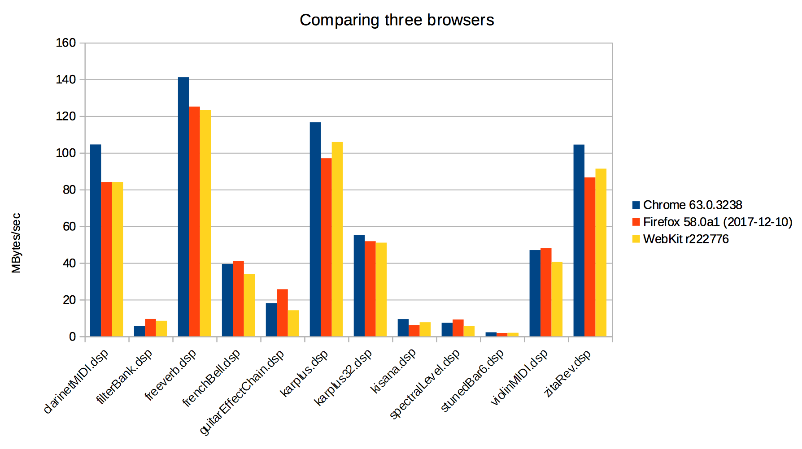
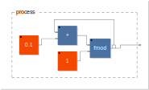

<div class="container-fluid"><div class="row faust-doc"><nav id="TOC" class="col-3 faust-doc-content"><div style="height: 100%;overflow-y: scroll;"><ul class="nav nav-pills flex-column"><ul>
<li><a class="nav-link" href="#faust-news">Faust News</a></li>
<li><a class="nav-link" href="#view-fausts-evolution"><strong>2018-07-23:</strong> View Faust’s evolution</a></li>
<li><a class="nav-link" href="#faust-awards-2018-to-iplug-2"><strong>2018-07-23:</strong> Faust Awards 2018 to iPlug 2 !</a></li>
<li><a class="nav-link" href="#international-faust-conference-ifc-2018"><strong>2018-07-10:</strong> International Faust Conference (IFC) 2018</a></li>
<li><a class="nav-link" href="#faust-award-2018"><strong>2018-02-18:</strong> Faust Award 2018</a></li>
<li><a class="nav-link" href="#webaudio-wasm-benchmark-pages-and-tools"><strong>2017-12-12:</strong> WebAudio wasm benchmark pages and tools</a></li>
<li><a class="nav-link" href="#st-international-faust-conference"><strong>2017-11-07:</strong> 1st International Faust Conference</a></li>
<li><a class="nav-link" href="#new-faust-editor"><strong>2017-10-20:</strong> New Faust Editor</a></li>
<li><a class="nav-link" href="#performances-of-audio-dsp-code-compiled-in-webassembly"><strong>2017-09-15:</strong> Performances of audio DSP code compiled in WebAssembly</a></li>
<li><a class="nav-link" href="#deploying-faust-dsp-on-the-web"><strong>2017-08-18:</strong> Deploying Faust DSP on the Web</a></li>
<li><a class="nav-link" href="#using-a-custom-memory-allocator"><strong>2017-06-16:</strong> Using a custom memory allocator</a></li>
<li><a class="nav-link" href="#optimizing-the-dsp-cpu-usage"><strong>2017-04-26:</strong> Optimizing the DSP CPU usage</a></li>
<li><a class="nav-link" href="#faust-meets-juce"><strong>2017-02-21:</strong> Faust meets JUCE</a></li>
<li><a class="nav-link" href="#faust-webassembly-backend"><strong>2017-01-13:</strong> Faust WebAssembly backend</a></li>
<li><a class="nav-link" href="#faust-awards-2016-ambitools"><strong>2016-10-17:</strong> Faust Awards 2016: Ambitools !</a></li>
<li><a class="nav-link" href="#the-first-faust-book-is-korean"><strong>2016-08-30:</strong> The first FAUST book is Korean !</a></li>
<li><a class="nav-link" href="#faust-interpreter-backend"><strong>2016-06-30:</strong> Faust interpreter backend</a></li>
<li><a class="nav-link" href="#faust-and-the-web-audio-api-3"><strong>2016-04-07:</strong> Faust and the Web Audio API (3)</a></li>
<li><a class="nav-link" href="#faust-award-2016"><strong>2016-02-05:</strong> Faust Award 2016</a></li>
<li><a class="nav-link" href="#controlling-with-midi"><strong>2016-01-14:</strong> Controlling with MIDI</a></li>
<li><a class="nav-link" href="#creating-polyphonic-instruments"><strong>2016-01-13:</strong> Creating polyphonic instruments</a></li>
<li><a class="nav-link" href="#using-the-dynamic-compilation-chain"><strong>2016-01-12:</strong> Using the dynamic compilation chain</a></li>
<li><a class="nav-link" href="#developing-a-new-architecture-file"><strong>2016-01-11:</strong> Developing a new architecture file</a></li>
<li><a class="nav-link" href="#new-faust-online-course"><strong>2015-11-15:</strong> New Faust online course</a></li>
<li><a class="nav-link" href="#fluctuat-nec-mergitur"><strong>2015-11-13:</strong> fluctuat nec mergitur</a></li>
<li><a class="nav-link" href="#a-simple-organ"><strong>2015-10-01:</strong> A Simple Organ</a></li>
<li><a class="nav-link" href="#a-sine-oscillator"><strong>2015-09-30:</strong> A Sine Oscillator</a></li>
<li><a class="nav-link" href="#the-faust-online-compiler-is-back"><strong>2015-09-11:</strong> The Faust Online Compiler is back!</a></li>
<li><a class="nav-link" href="#faust2md"><strong>2015-06-06:</strong> faust2md</a></li>
<li><a class="nav-link" href="#your-first-faust-example"><strong>2015-07-29:</strong> Your first Faust example</a></li>
<li><a class="nav-link" href="#new-website"><strong>2015-07-28:</strong> New Website!</a></li>
<li><a class="nav-link" href="#first-faust-open-source-software-competition"><strong>2015-01-07:</strong> First Faust Open Source Software Competition</a></li>
<li><a class="nav-link" href="#faust-and-the-web-audio-api-2"><strong>2014-10-14:</strong> Faust and the Web Audio API (2)</a></li>
<li><a class="nav-link" href="#faustlive-is-released"><strong>2014-06-14:</strong> FaustLive is released!</a></li>
<li><a class="nav-link" href="#new-faust-released"><strong>2014-04-14:</strong> New Faust released</a></li>
<li><a class="nav-link" href="#faustgen-llvm-powered-faust-embedded-compiler-as-an-external-for-maxmsp"><strong>2012-12-10:</strong> faustgen~ : LLVM powered Faust embedded compiler as an external for Max/MSP</a></li>
</ul>
</div>
</nav>
<main role="main" class="col-9 ml-sm-auto px-4 faust-doc-content">
<div data-spy="scroll" data-target="#TOC" data-offset="100" style="height: 100%;overflow-y: scroll;">
<!-- doc-begin -->
<h1 id="faust-news">Faust News</h1>
<h1 id="view-fausts-evolution"><strong>2018-07-23:</strong> View Faust’s evolution</h1>
<p>View the evolution of the <a href="https://github.com/grame-cncm/faust">Faust project</a> from 2004 to 2018.</p>
<iframe class="mx-auto d-block" width="560" height="315" src="https://www.youtube.com/embed/_xLJdYkd89E" frameborder="0" allow="autoplay; encrypted-media" allowfullscreen>
</iframe>
<p>The visualization was done using <a href="http://gource.io/">Gource</a>. Here is the command used (as suggested by <a href="http://www.fullybaked.co.uk/articles/getting-gource-running-on-osx">fullybacked</a>):</p>
<pre><code>gource --hide dirnames,filenames --seconds-per-day 0.1 --auto-skip-seconds 1 -1920x1024 -o - | ffmpeg -y -r 60 -f image2pipe -vcodec ppm -i - -vcodec libx264 -preset ultrafast -pix_fmt yuv420p -crf 1 -threads 0 -bf 0 faust-hd.mp4</code></pre>
<hr />
<h1 id="faust-awards-2018-to-iplug-2"><strong>2018-07-23:</strong> Faust Awards 2018 to iPlug 2 !</h1>
<p><em>The Faust Open Source Software Competition aims at promoting innovative high-quality free audio software developed with Faust, a functional programming language for realtime signal processing and sound synthesis. The competition is sponsored by <a href="http://www.grame.fr">GRAME</a>, Centre National de Création Musicale.</em></p>
<p></p>
<h2 id="faust-award-2018-to-iplug-2">Faust Award 2018 to <a href="https://github.com/iplug2">iPlug 2</a></h2>
<p>The <strong>Faust Award 2018</strong> was attributed by an international committee composed of :</p>
<ul>
<li>Jean-Louis Giavitto (IRCAM, Paris, France),</li>
<li>Albert Graef (Johannes Gutenberg U., Mainz, Germany),</li>
<li>Pierre Jouvelot (Ecole des Mines, Paris, France),</li>
<li>Victor Lazzarini (Maynooth U., Maynooth, Ireland),</li>
<li>Romain Michon (Stanford U., Palo Alto, USA)</li>
<li>Yann Orlarey (GRAME, Lyon, France),</li>
<li>Laurent Pottier (U. Jean Monnet, Saint-Etienne, France),</li>
<li>Julius Smith (Stanford U., Palo Alto, USA)</li>
</ul>
<p>to <a href="https://github.com/iplug2">iPlug 2</a> a free open source C++ audio plug-in framework, allowing developers to create audio plug-ins and apps across a wide range of formats from the same code, including graphical user interface and DSP components. Amongst many other new features and a reworked code base, version 2 includes support for FAUST, allowing sections of audio DSP to be implemented using the FAUST language, and easily integrated with other C++ elements.</p>
<p><a href="https://github.com/iplug2">iPlug 2</a> is developed by Oliver Larkin and Alex Harker from the original iPlug, by Cockos inc. that was open sourced in 2008. The project is under active development and will be publicly released at the end of 2018.</p>
<p>The jury praised the quality, the ambition, and the usefulness of <a href="https://github.com/iplug2">iPlug 2</a> as a Faust development framework! Check the <a href="https://youtu.be/AlDw6iCD-7Y">demo here</a>. We hope that the Faust Award will help the authors to fully finalize the project.</p>
<h2 id="faust-student-software-competition-to-cloud-generator">Faust Student Software Competition to <a href="https://github.com/visstup/cloud-generator">Cloud Generator</a></h2>
<p>In parallel to the main competition, the <em>Faust Student Software Competition</em>, is intended to promote small, but innovative Faust applications, typically developed in the framework of student projects.</p>
<p>The <em>student prize 2018</em> was awarded to <a href="https://github.com/visstup/cloud-generator">Cloud Generator</a> a nine-voice polyphonic synthesizer developed by Rittik Wystup.</p>
<p>The jury praised the audio quality and the care taken by Rittik Wystup in his project! Check the Cloud Generator <a href="https://youtu.be/3uzxZlojxuI">demo here</a>.</p>
<hr />
<h1 id="international-faust-conference-ifc-2018"><strong>2018-07-10:</strong> International Faust Conference (IFC) 2018</h1>
<h2 id="international-faust-conference-ifc18-july-17-18-2018">International Faust Conference <a href="http://www.ifc18.uni-mainz.de/">IFC18</a>: July 17-18, 2018</h2>
<p>The International Faust Conference <a href="http://www.ifc18.uni-mainz.de/">IFC18</a> will take place at the Johannes Gutenberg University of Mainz (Germany) on July 17-18, 2018. It aims at gathering developers and users of the Faust programming language to present current projects and discuss future directions for Faust and its community.</p>
<p>Participants will be able to share their work through paper presentations. A series of round tables on various topics will serve as a platform to brainstorm on Faust’s features, semantics, tools, applications, etc. to determine future directions for this language. Open spaces for demos and workshops will be available for participants to openly share their ongoing projects with the rest of the community.</p>
<p>As a special event, the winner of GRAME’s Faust Open-Source Software Competition will be announced during <a href="http://www.ifc18.uni-mainz.de/">IFC18</a>.</p>
<p>IFC-18 is free and everyone is welcome to attend! <a href="https://docs.google.com/forms/d/e/1FAIpQLSdkHQ0ruvzTKbufLwL8z-rOpQqfi9TMi5Wie4zoN8zX0vfzYA/viewform">Please register here</a></p>
<p>–</p>
<h1 id="faust-award-2018"><strong>2018-02-18:</strong> Faust Award 2018</h1>
<h2 id="faust-award-2018-deadline-june-1-2018">Faust Award 2018: deadline June 1, 2018</h2>
<p>The Faust Open-Source Software Competition is intended to promote innovative high-quality free audio software developed with the Faust programming language, as well as development tools built around the Faust compiler itself. The Faust Open-Source Software award will be attributed to the best submission by an international committee of leading experts in the field. The competition is sponsored by Grame, centre national de création musicale. The winning software will receive a 2000€ price to encourage its authors. The results will be announced July 17, 2018 during the International Faust Conference in Mainz <a href="http://www.ifc18.uni-mainz.de/">IFC18</a>.</p>
<p></p>
<p>To participate, the software must be provided with source code and licensed with a Free/Open Source license. A substantial part of the software must be written in Faust and the Faust source code must be provided. As part of the review process, the software will be built from the sources. All source code, license, video demonstration, installation instructions, and any other documentation must be available on a public web page. License compatibility with other open source software is encouraged. Dependencies on non-open source third-party software are discouraged, with the exception of operating systems and freely available commercial packages.</p>
<p>Authors are required to prepare a video demonstrating the software. This video must be done carefully, and should convincingly present the qualities of the software. The submission must also contain any useful documentation, including examples of how the provided software might be used, existing prototypes that use the software, download statistics or other public usage information. The criteria for judging submissions includes broad applicability and potential impact, novelty, technical depth, reusability, etc.</p>
<h2 id="junior-competition">Junior Competition</h2>
<p>In parallel to the Faust Open-Source Software Competition we have a junior competition, the Faust Student Software Competition, with a 200€ prize for the winner. The Faust Student Software Competition is intended to promote interesting audio processing and synthesis applications written in Faust in a single file in less than 1000 words. The word count is done after removing the comments from the code:</p>
<pre><code>cat foo.dsp | stripcmt | wc -w.</code></pre>
<p>The use of the standard Faust libraries is strongly encouraged. They don’t take part in the word count.</p>
<h2 id="important-dates">Important dates</h2>
<ul>
<li>Start of the competition: February 18, 2018</li>
<li>Software Submission Deadline: June 1, 2018</li>
<li>Results of the competition: July 17, 2018</li>
</ul>
<h2 id="submission-guidelines">Submission Guidelines</h2>
<p>Authors interested in participating in the Faust Open Source Software Competition or the Faust Student Software Competition should send a submission email to <a href="mailto:faustaward@grame.fr" class="email">faustaward@grame.fr</a> with a PDF file attached containing the following information:</p>
<ul>
<li>Title of submission,</li>
<li>Category of submission (<em>Faust Open Source Software Competition</em> or <em>Faust Student Software Competition</em>),</li>
<li>Name, email and affiliation of the main author,</li>
<li>Names, emails and affiliations of other authors,</li>
<li>A permanent link for the open source software (e.g., Sourceforge, GitHub, Google Code, etc.),</li>
<li>A permanent link for the video demonstration (e.g., YouTube, Vimeo, etc.),</li>
<li>A link to a compressed archive file that contains the software (source code, documentation, build/install instructions, and licenses). Comprehensive and clear build/install instructions will be a crucial component of any submission. The committee will make a reasonable effort to build the software for the top contributions, but if they are unable to make the software run, it will be excluded from the competition.</li>
</ul>
<h2 id="international-committee">International Committee</h2>
<ul>
<li>Jean-Louis Giavitto (IRCAM, Paris, France),</li>
<li>Albert Gräf (Johannes Gutenberg U., Mainz, Germany),</li>
<li>Pierre Jouvelot (Ecole des Mines, Paris, France),</li>
<li>Victor Lazzarini (Maynooth U., Maynooth, Ireland),</li>
<li>Romain Michon (CCRMA, Stanford , USA)</li>
<li>Yann Orlarey (Grame, Lyon, France),</li>
<li>Laurent Pottier (U. Jean Monnet, Saint Etienne, France),</li>
<li>Julius Smith (CCRMA, Stanford , USA)</li>
</ul>
<h2 id="previous-winners">Previous Winners</h2>
<ul>
<li>2015: <a href="http://guitarix.sourceforge.net/">Guitarix</a>, by Hermann Meyer and Andreas Degert</li>
<li>2016: <a href="http://www.sekisushai.net/ambitools/">Ambitools</a>, by Pierre Lecomte; Student prize: <a href="https://patheo.github.io/TouchVoices/">TouchVoices</a>, by Pierre-Adrien Théo.</li>
</ul>
<hr />
<h1 id="webaudio-wasm-benchmark-pages-and-tools"><strong>2017-12-12:</strong> WebAudio wasm benchmark pages and tools</h1>
<p>WebAudio wasm benchmark pages and tools allow to test statically generated HTML pages from Faust DSP. Audio generating pages in ScriptProcessor or AudioWorklet mode can be tested first. DSP CPU benchmark pages can be used to test the perfomance of wasm code across different browsers.</p>
<p>Tools to generate new DSP CPU benchmark pages are also available, and finally a page allowing to test the dynamic compilation chain can be acccesed.</p>
<h2 id="simple-pages">Simple pages</h2>
<p>Simple pages can be used to test simple monophonic and polyphonic DSP, generated as ScriptProcessor or AudioWorklet WebAudio nodes.</p>
<ul>
<li><a class="nav-link" href="misc/modules/osc-wasm.html">statically generated OSC as a ScriptProcessor node</a></li>
<li><a class="nav-link" href="misc/modules/organ-wasm.html">statically generated MIDI controllable Organ as a ScriptProcessor node</a></li>
</ul>
<p>Note that as 12/12/17, AudioWorklet pages can ony be tested with Chrome Canary. Be sure to <a href="https://googlechromelabs.github.io/web-audio-samples/audio-worklet/">activate AudioWorklet mode</a> first. On a MacBook Pro OSX El Capitan 2,2 GHz Intel Core i7, <strong>we still hear audio glitches when testing them</strong>, for example when opening the JavaScript console, or interacting with other applications (like scrolling in the XCode editor, scrolling in the terminal…)</p>
<ul>
<li><a class="nav-link" href="misc/modules-worklet/osc-wasm-worklet.html">statically generated OSC as an AudioWorlet node</a></li>
<li><a class="nav-link" href="misc/modules-worklet/organ-wasm-worklet.html">statically generated MIDI controllable Organ as an AudioWorlet node</a></li>
</ul>
<h2 id="polyphonic-midi-aware-pages">Polyphonic MIDI aware pages</h2>
<p>More complex statically generated polyphonic MIDI aware pages can be tested.</p>
<p>ScriptProcessor based pages:</p>
<ul>
<li><a class="nav-link" href="misc/modules/clarinetMIDI.html">modules/clarinetMIDI.html</a></li>
<li><a class="nav-link" href="misc/modules/elecGuitarMIDI.html">modules/elecGuitarMIDI.html</a></li>
<li><a class="nav-link" href="misc/modules/violinMIDI.html">modules/violinMIDI.html</a></li>
</ul>
<p>AudioWorklet based pages:</p>
<ul>
<li><a class="nav-link" href="misc/modules-worklet/clarinetMIDI.html">modules-worklet/clarinetMIDI.html</a></li>
<li><a class="nav-link" href="misc/modules-worklet/elecGuitarMIDI.html">modules-worklet/elecGuitarMIDI.html</a></li>
<li><a class="nav-link" href="misc/modules-worklet/violinMIDI.html">modules-worklet/violinMIDI.html</a></li>
</ul>
<h2 id="benchmark-pages">Benchmark pages</h2>
<p>A set of statically generated pages allow to measure the DSP CPU use of Faust generated WebAssemby code. The <strong>compute</strong> method is repeatedly called in a loop (taking 100% of a core) which duration is measured. Results as MBytes/sec as well a DSP CPU load in % of a 1024 frames, 44.1 kHz audio buffer are displayed.</p>
<p>On the following pages, just hit the <em>Start benchmark</em> button, and wait for the result to be displayed. Note that since the computation is done in the main JavaScript thread, don’t disturb your machine too much to get a reliable result. The pages can typically be used to compare the performances of different browsers:</p>
<ul>
<li><a class="nav-link" href="misc/bench/clarinetMIDI.html">bench/clarinetMIDI.html</a></li>
<li><a class="nav-link" href="misc/bench/djembe.html">bench/djembe.html</a></li>
<li><a class="nav-link" href="misc/bench/filterBank.html">bench/filterBank.html</a></li>
<li><a class="nav-link" href="misc/bench/freeverb.html">bench/freeverb.html</a></li>
<li><a class="nav-link" href="misc/bench/frenchBell.html">bench/frenchBell.html</a></li>
<li><a class="nav-link" href="misc/bench/guitarEffectChain.html">bench/guitarEffectChain.html</a></li>
<li><a class="nav-link" href="misc/bench/karplus.html">bench/karplus.html</a></li>
<li><a class="nav-link" href="misc/bench/karplus32.html">bench/karplus32.html</a></li>
<li><a class="nav-link" href="misc/bench/kisana.html">bench/kisana.html</a></li>
<li><a class="nav-link" href="misc/bench/spectralLevel.html">bench/spectralLevel.html</a></li>
<li><a class="nav-link" href="misc/bench/stunedBar6.html">bench/stunedBar6.html</a></li>
<li><a class="nav-link" href="misc/bench/violinMIDI.html">bench/violinMIDI.html</a></li>
<li><a class="nav-link" href="misc/bench/zitaRev.html">bench/zitaRev.html</a></li>
</ul>
<h2 id="testing-the-denormal-issue">Testing the denormal issue</h2>
<p>A specific problem occurs when audio computation produces denormal float values, which is quite common with recursive filters, and can be extremely costly to compute on some processors like the Intel family for instance. Loog at the <a href="misc/news/2017/09/15/backend-benchmarks.html">following page</a> for more explanations. Even with the software FTZ mode, we still see huge DSP CPU issue in some cases like this djembe physical model based on simple biquad filters:</p>
<ul>
<li><a class="nav-link" href="misc/modules/djembe.html">modules/djembe.html</a></li>
</ul>
<p>On OSX for instance, open the <strong>Activity Monitor</strong> tool and look as your browser CPU use. Then hit the checkbox to start playing, and hit it again to stop it. Silence should be produced, but actually very small sample values (= subnormals) are generated. If your machine uses an Intel CPU, you will see CPU raise quite rapidly ! (tested on a MacBook Pro OSX El Capitan 2,2 GHz Intel Core i7).</p>
<h2 id="benchmark-tools">Benchmark tools</h2>
<p>For developers, benchmark tools allow to generate HTML pages to test your DSP. Look in particular at the <a href="https://github.com/grame-cncm/faust/tree/master-dev/tools/benchmark"><strong>faust2benchwasm</strong> script.</a></p>
<h2 id="dynamic-compilation-chain-testing-page">Dynamic compilation chain testing page</h2>
<p>A more complete testing page for monophonic and polyphonic MIDI aware DSP, ScriptProcessor or AudioWorklet mode, FTZ selection mode is <a href="misc/dynamic/faustlive-wasm.html">available here</a>.</p>
<hr />
<h1 id="st-international-faust-conference"><strong>2017-11-07:</strong> 1st International Faust Conference</h1>
<p>1st International Faust Conference - Johannes Gutenberg University, Mainz (Germany), July 17-18, 2018</p>
<p>The International Faust Conference <a href="http://www.ifc18.uni-mainz.de">IFC-18</a> will take place at the <a href="http://www.uni-mainz.de">Johannes Gutenberg University</a> of Mainz (Germany) on July 17-18, 2018. It aims at gathering developers and users of the <a href="/">Faust programming language</a> to present current projects and discuss future directions for Faust and its community. Participants will be able to share their work through paper presentations. A series of round tables on various topics will serve as a platform to brainstorm on Faust’s features, semantics, tools, applications, etc. to determine future directions for this language. Open spaces for demos and workshops will be available for participants to openly share their ongoing projects with the rest of the community.</p>
<p>As a special event, the winner of GRAME’s Faust Open-Source Software Competition will be announced during IFC-18.</p>
<p>IFC-18 is free and everyone is welcome to attend!</p>
<h2 id="call-for-papers">Call for Papers</h2>
<p>We welcome submissions from academic, professional, independent programmers, artists, etc. We solicit original papers centered around the Faust programming language in the following categories:</p>
<ul>
<li>Original research</li>
<li>Technology tutorial</li>
<li>Artistic project report (e.g., installation, composition, etc.)</li>
</ul>
<p>Paper should be up to 14 pages in length, non anonymous, and formatted according to <a href="http://www.ifc18.uni-mainz.de/misc/IFC-18-templates.zip">this template</a>. <strong>Submissions should be carried out via our <a href="https://easychair.org/conferences/?conf=ifc18">EasyChair portal</a></strong>.</p>
<p>All submissions are subject to peer review. Acceptance may be conditional upon changes being made to the paper as directed by reviewers.</p>
<p>Accepted papers will be published on-line as well as in the IFC-18 proceedings paper version. They will be presented by their author(s) at IFC-18 as 15 minutes presentations (+ 5 minutes for questions).</p>
<p>Feel free to contact us if you have any question.</p>
<h2 id="important-dates-1">Important Dates</h2>
<ul>
<li>Papers submission deadline: March 2, 2018</li>
<li>Notification of Acceptance: May 1, 2018</li>
<li>Camera-Ready Version: June 1, 2018</li>
</ul>
<h2 id="call-for-round-table-topics">Call for Round Table Topics</h2>
<p>A series of round tables on the following themes will take place both afternoons of IFC-18:</p>
<ul>
<li>Faust Tools (e.g., Architectures, IDE, Faust Code Generator, On-Line Services, etc.)</li>
<li>DSP in Faust and Faust Libraries (e.g., New Algorithms, New Libraries, Missing Functions, etc.)</li>
<li>Faust Compiler and Semantics</li>
<li>Other Topics/Open Session</li>
</ul>
<p>We solicit topic suggestions from the Faust community for each of these themes. Topics can be submitted by means of <a href="https://goo.gl/forms/0fBYxk28jlRdtqRM2">this Google form</a>. They will be introduced during the round tables by the session chair.</p>
<h2 id="contact">Contact</h2>
<p>Please, address your questions to: <strong>ifc18@muwiinfa.geschichte.uni-mainz.de</strong></p>
<p>Conference website: <strong>http://www.ifc18.uni-mainz.de</strong></p>
<hr />
<h1 id="new-faust-editor"><strong>2017-10-20:</strong> New Faust Editor</h1>
<p>We are very happy to announce the online <a href="../../tools/editor">Faust Editor</a>. It can be used to <em>edit</em>, <em>compile</em> and <em>run</em> Faust code from any recent Web Browser with <a href="http://webassembly.org">WebAssembly</a> support. This editor works completely on the client side and it is therefore very convenient for situations with many simultaneous users (workshops, classrooms, etc.). It embeds the latest version of the Faust compiler with an efficient WebAssembly backend and offers polyphonic MIDI support.</p>
<p></p>
<h2 id="features">Features</h2>
<p>The editor engine is based on <a href="https://codemirror.net/">codemirror</a>. It offers <em>syntax highlighting</em>, <em>auto completion</em> and direct access to the <em>online documentation</em>. The documentation command (ctrl-d) uses the function name at the cursor position to locate to the relevant information.</p>
<p></p>
<h2 id="recommended-browsers">Recommended Browsers</h2>
<p>The recommended browsers are the latest versions of Firefox and Chrome. Chrome is recommended for MIDI, but it requires an https connexion to use the audio inputs. On the other hand MIDI is not supported by Firefox.</p>
<h2 id="useful-links">Useful links</h2>
<ul>
<li><a class="nav-link" href="../../tools/editor">Editor</a>: the official link,</li>
<li><a class="nav-link" href="https://grame-cncm.github.io/fausteditorweb/">https://grame-cncm.github.io/fausteditorweb/</a>: an alternative link on GitHub. Because this is an https address, audio inputs will work (but not the export function),</li>
<li><a class="nav-link" href="https://github.com/grame-cncm/fausteditorweb">https://github.com/grame-cncm/fausteditorweb</a>: the GitHub repository.</li>
</ul>
<hr />
<h1 id="performances-of-audio-dsp-code-compiled-in-webassembly"><strong>2017-09-15:</strong> Performances of audio DSP code compiled in WebAssembly</h1>
<p>Porting and running large C/C++ code base on the Web have been the subject of several competing projects in the recent years, from Google NaCl/PNaCl to Mozilla <a href="http://asmjs.org">asm.js</a>. Recently standardized WebAssembly language inherits from ideas experimented in both approaches, with the Mozilla vision finnally winning as <a href="http://robert.ocallahan.org/2017/06/webassembly-mozilla-won.html">Robert O’Callahan explains here</a>. Coupled with the <a href="https://webaudio.github.io/web-audio-api/">WebAudio API</a>, running real-time audio code in the Web now appears to be an achievable goal.</p>
<p>WebAssembly is a hot topic in the JavaScript ecosystem. The WebAudio community is eagerly waiting for the <a href="https://webaudio.github.io/web-audio-api/#AudioWorklet">AudioWorklet</a> specification, with its promised reduced latency and glitch-free audio rendering, to land in browser development versions, and be tested. Porting well established C/C++ codebase with <a href="http://kripken.github.io/emscripten-site/">Emscripten</a>, like the <a href="https://www.mansoft.nl/csound/">Csound</a> framework as an example, or using DSL languages like Faust, will then naturally beneficiate from improved and more stable performances.</p>
<p>The Faust ecosystem already allows to generate <a href="#using-webaudio-api">static or dynamically compiled WebAssembly based WebAudio nodes</a>. These nodes are still using the deprecated ScriptProcessor WebAudio interface. Premillinary work has been started to be ready as soon at the AudioWorklet model will be testable.</p>
<p>In the meantime, work have been started using the <a href="https://github.com/AndrewScheidecker/WAVM">WAVM</a>, a standalone VM for WebAssembly, that can load both the standard binary and text wasm format, compiling it in native code using the LLVM chain (generating LLVM IR and compiling it on the fly to native code using LLVM JIT compiler), and running it at (near) native speed.</p>
<p><a href="https://github.com/sletz/WAVM/tree/faust/Source/Programs">Glue code to load and run Faust generated wasm modules</a> has been written. Validation and benchmarking tools have been developed. Performances comparison with the C++ and LLVM IR Faust backends is the subject of this post.</p>
<h2 id="comparing-the-faust-c-llvm-ir-and-wastwasm-backends">Comparing the Faust C++, LLVM IR and wast/wasm backends</h2>
<p>The WebAssembly approach promises <em>near native</em> performances for C/C++ written code compiled to WebAssembly using the Emscripten tool chain. Other languages like Rust (using the <a href="https://github.com/brson/mir2wasm">mir2wasm</a> tool) experiment direct WebAssembly generation. It seems clear that as WebAssembly specification and implementation stabilize, more and more languages will directly generate wasm to be deployed in browsers. The question of the <strong>quality of code generation at each step of the compilation chain</strong> will rapidly emerge.</p>
<p>While WebAssembly is initially designed to run on the Web, it may <a href="http://webassembly.org/docs/non-web/">be deployed in non Web environnement like nodejs</a>, or even in <a href="https://github.com/AndrewScheidecker/WAVM">standalone VM like WAVM</a>. Thus WebAssembly becomes a portable binary format that can be used in a large variety of situations. This is especially of interest for a DSL language like Faust.</p>
<h3 id="faust-wastwasm-backend">Faust wast/wasm backend</h3>
<p>Faust wast/wasm backend directly produce WebAssembly code from the Faust internal FIR (Faust Imperative Representation) code. Generated modules are rather light since they define a very simple ABI to be used by the loader code. Two generation models have been defined:</p>
<ul>
<li><p>in <em>monophonic</em> mode the wast/mast module internally allocates a memory block to be used for the DSP state (controllers, delays lines, waveforms…) as well as audio buffers.</p></li>
<li><p>in <em>polyphonic</em> mode, the memory block will be allocated by the loader environnement. This block will typically be sized to contain all the needed voices for the polyphonic DSP.</p></li>
</ul>
<p>In both cases, a full description of the DSP state as a JSON string is generated in the <a href="http://webassembly.org/docs/modules/#data-section">module data segment</a> (including memory indexes of all controllers). Loader code will get and decode this JSON description, and use whatever parts of the description it needs to run the DSP code. In particular, control memory zones (corresponding to the UI items like buttons, sliders, bargraph…) can be directly read/written by the wrapper code.</p>
<h3 id="benchmark-of-c-llvm-ir-and-wastwasm-generated-code">Benchmark of C++, LLVM IR and wast/wasm generated code</h3>
<p>Since Faust already generates C++ or LLVM IR code, the performances of those two backends can be compared with the new wasm one. Using the WAVM C++ written machine allows to deploy the <a href="/news/2017/04/26/optimizing-compilation-parameters.html">same measuring code</a>. The first benchmark compares the speed of C++, LLVM IR and wasm backends running a set of DSP, running on a MacBook Pro 2,2 GHz Core I7 with OSX El capitan. The same 4.0 version of LLVM toolchain has been used with the three backend. C++ and LLVM IR code has been compiled with the <em>-Ofast</em> optimization flag, the WAVM runtime is the standard version one (without any specific audio optimization, see later):</p>
<p></p>
<p>The diagrams clearly shows that the wasm code is still slower than C++ or LLVM IR code, but speed difference is not so high in most cases. Some DSP behaviours need to be understood in more details.</p>
<h3 id="optimizing-the-wavm-runtime-for-audio-code">Optimizing the WAVM runtime for audio code</h3>
<p>The WAVM runtime strictly conforms to the WebAssembly specification, thus behaving as a interesting base reference. In the audio domain, the deployed code is usually compiled with specific optimization flags. Since C++ WAVM runtime can be hacked quite easily, we did several changes into the reference implementation to gain some speed:</p>
<ul>
<li><p>removing the <a href="https://github.com/sletz/WAVM/commit/cf6011026aa75dfd0f88e051da271ce0c0d525a9"><em>atomic</em> flag in all load/store</a> that are added to pass all spec WebAssembly tests.</p></li>
<li><p>adding the equivalent of <em>-fast-math</em> compilation flag that <a href="https://github.com/sletz/WAVM/commit/1aa96a2088ed1c6eb918b7f292f4571aecdfc6da">have to be done at LLVM IR and JIT (= native)</a> generation steps.</p></li>
<li><p>and finally simplifying some mathematical operators, <a href="https://github.com/sletz/WAVM/commit/a9e2a91c53e79168fb7e193beb36e99d81d0be21">using their standard definition</a> instead of the specific WAVM coded ones that strictly implement <a href="http://webassembly.org/docs/semantics/">WebAssembly official semantic</a> (see for instance the definition of <em>f32.min/f32.max</em> operations).</p></li>
</ul>
<p>Here is the diagram of DSP examples run with reference WAVM runtime, and the three specific optimizations:</p>
<p></p>
<p>After generating the LLVM IR code, the WAVM runtime runs a set of LLVM IR to IR optimizations passes. It remains to be tested if adding more optimization passes (especially the <strong>auto-vectorizations</strong> ones) could help producing even better code.</p>
<h3 id="webassembly-module-optimization-with-binaryen">WebAssembly module optimization with Binaryen</h3>
<p>Binaryen is a <a href="https://github.com/WebAssembly/binaryen">compiler and toolchain infrastructure library for WebAssembly</a>, written in C++. We tested the <strong>wasm-opt</strong> tool at <strong>-O3</strong> level on Faust generated wasm modules to estimate which speedup we can expect. The following diagram shows limited gains, with no more than 5% in some of the tested cases:</p>
<p></p>
<h3 id="float-denormal-handling">Float denormal handling</h3>
<p>A specific problem occurs when audio computation produces denormal float values, which is quite common with recursive filters, and can be extremely costly to compute on some processors like the Intel family for instance. A Flush To Zero (FTZ) mode for denormals can usually be set at hardware level, but it not yet available in the WebAssembly MVP version, which strictly conform to the IEEE 754 norm 8.</p>
<p>Thus an automatic software strategy which consists in adding FTZ code in all recursive loops has been implemented in the Faust compiler. To activate it, the <strong>-ftz</strong> compilation parameter must be used at compilation time.</p>
<p>The <strong>-ftz 1</strong> mode adds a test in each recursive loop which uses the <em>fabs</em> function and a threshold to detect subnormal samples (slower). The <strong>-ftz 2</strong> mode adds a test in each recursive loop which uses a mask to detect subnormal samples (faster).</p>
<p>Even if using software ftz is not strictly needed in our benchmark chain (since the C++ WAVM uses the ftz hardware protection mode), we can still compare the speed of the different ftz options. Here is the result of code generated with -ftz from 0 to 2:</p>
<p></p>
<h3 id="comparing-three-browsers-on-osx-el-capitan">Comparing three browsers on OSX El Capitan</h3>
<p><a href="/bench/">HTML test pages</a> were prepared to compare the performances of the three main browsers on OSX El Capitan. The DSP code is compiled with float denormal protection on (-ftz 2). The generated wasm module <em>compute</em> method is called repeatedly in a timed loop, using successive slices of a big allocated circular audio buffer to avoid cache effects. Here are the results:</p>
<p></p>
<p>The fasted one (Chrome for now) can be compared with C++, LLVM IR, WAVM native engines, all compiled with float denormal protection on (-ftz 2):</p>
<p></p>
<h2 id="comments-and-conclusion">Comments and Conclusion</h2>
<p>Testing wasm JIT machines inside browsers is not an easy task. The C++ WAVM runtime revealed to be an excellent tool to compare the Faust C++, LLVM IR and wasm backend. Since its code can be easily adapted, one can estimate also what can be expected <strong>deploying wasm DSP modules in pure native environments</strong>, outside of the browser, where some <strong>audio specific optimizations</strong> may be considered.</p>
<p>Measures done on a set of Faust DSP show that WebAssembly code still run slower than C++ or LLVM IR generated code in most cases, <strong>up to almost 66% slower</strong> in the less favorable examples. This value will typically be a bit worse when deploying in browsers, since <strong>float denormal protection code has to be used</strong>. Benchmarks in browser wasm runtime still need to be done to confirm or refine these findings.</p>
<p>Comparing the <strong>Chrome</strong>, <strong>Firefox</strong> and <strong>WebKit</strong> browsers on OSX El Capitan shows that Chrome is currently the fastest engine in most cases, with Firefox and WebKit quite similar (with a slight plus for WebKit).</p>
<p>Comparing the Chrome browser with native engines shows results from <strong>4,8 times slower</strong> (filterBank.dsp), <strong>2,8 times slower</strong> (sTunedBar6.dsp) up to much more favorable cases (karplus32.dsp). Note that filterBank.dsp example is a bit of a pathological case, since Chrome is significantly slower than Firefox and WebKit in this case, and filterBank.dsp uses a lot of <em>pow(10, x)</em> code that is rewritten an optimized as <em>exp10(x)</em> with the C++ backend path.</p>
<hr />
<h1 id="deploying-faust-dsp-on-the-web"><strong>2017-08-18:</strong> Deploying Faust DSP on the Web</h1>
<p><strong>EDIT : we are at the Web Audio conference 2017, and it appears that the way we currently extend the ScripProcessorNode with Faust code is not the Right Way… Part of the post concerning the exposed API will probably change a bit in the near future…</strong></p>
<p>Using latest developments done for the Web (the new <strong>WebAssembly backends</strong> and <strong>libfaust</strong> library compiled in WebAssembly with Emscripten), statically and dynamically Faust generated WebAudio nodes can be easily produced and deployed on the Web.</p>
<h2 id="deploying-statically-compiled-faust-webaudio-nodes">Deploying statically compiled Faust WebAudio nodes</h2>
<p>From a <strong>foo.dsp</strong> source file, JavaScript and the associated WebAssembly files can be produced with the following script:</p>
<pre><code>faust2wasm foo.dsp </code></pre>
<p>This will generate a <strong>foo.wasm</strong> file with the WebAssembly module as binary code, as well as a <strong>foo.js</strong> wrapper file containing the code needed to turn the Faust DSP in a fully working WebAudio node (using an extended <strong>ScriptProcessor</strong> node). The name of the Faust DSP code file is used to define the final ScriptProcessorNode constructor name. So for instance if <strong>osc.dsp</strong> file is compiled, the following <strong>faust.createosc</strong> function will be generated:</p>
<pre><code>/** 
* Create a &#39;monophonic&#39; ScriptProcessorNode Web Audio object 
* by loading and compiling the Faust wasm file
*
* @param context - the Web Audio context
* @param buffer_size - the buffer_size in frames
* @param callback - a callback taking the created ScriptProcessorNode as parameter, 
* or null in case of error
*/
faust.createosc = function(context, buffer_size, callback)</code></pre>
<p>The resulting object is an extended ScriptProcessorNode, to be used as a regular node (like connected to other WebAudio nodes), but which also adds the Faust specific API as defined in the equivalent C++ generated <strong>dsp</strong> class (see the <strong>architecture/faust/dsp/dsp.h</strong> header for more technical details), as well as JavaScript more specific functions. For instance the following ones will have to be used to control the node:</p>
<pre><code>var paths = node.getParams(); // get the set of paths to read/write input control parameters</code></pre>
<p>Then knowing the path for a given parameter, the following function is used to change the parameter value:</p>
<pre><code>node.setParamValue(&quot;/Oscillator/freq&quot;, 0.6);</code></pre>
<p>A full JSON description of the node with the complete UI, can be retrieved with:</p>
<pre><code>var json = node.getJSON(); </code></pre>
<p>The complete usable API is fully documented in the generated JavaScript file in the <em>Public API to be used to control the WebAudio node</em> section.</p>
<h3 id="a-simple-example-web-page">A simple example Web page</h3>
<p>A simple Web page using the files generated by <strong>faust2wasm</strong> on the <strong>noise.dsp</strong> file can be defined with the following parts:</p>
<pre><code>&lt;!-- Load &#39;faust2wasm&#39; script generated .js file --&gt;
&lt;script src=&quot;noise.js&quot;&gt;&lt;/script&gt;</code></pre>
<p>A slider to control the noise volume parameter is defined with:</p>
<pre><code>&lt;P&gt; Noise volume:
&lt;input type=&quot;range&quot; oninput=&quot;changeVolume(event) &quot;min=&quot;0&quot; max=&quot;1&quot; value=&quot;0.5&quot; step=&quot;0.01&quot;/&gt;</code></pre>
<p>The WebAudio context is created and the noise slide hander is defined with:</p>
<pre><code>var isWebKitAudio = (typeof (webkitAudioContext) !== &quot;undefined&quot;);
var audio_context = (isWebKitAudio) ? new webkitAudioContext() : new AudioContext();
var noise = null;

// Slider handler to change the &#39;noise&#39; volume
function changeVolume(event)
{
    noise.setParamValue(&quot;/Noise/Volume&quot;, parseFloat(event.target.value));
}</code></pre>
<p>A <strong>startnoise</strong> function which creates the Faust WebAudio node is defined with:</p>
<pre><code>function startnoise()
{
    // Create the Faust generated node
    faust.createnoise(audio_context, 1024,
        function (node) {
            noise = node;
            console.log(noise.getJSON());
            // Print paths to be used with &#39;setParamValue&#39;
            console.log(noise.getParams());
            // Connect it to output as a regular WebAudio node
            noise.connect(audio_context.destination);
        });
}</code></pre>
<p>An finally the load handler is defined to activate the code:</p>
<pre><code>window.addEventListener(&quot;load&quot;, startnoise);</code></pre>
<p>Look at the <a href="/modules/noise-wasm.html">Noise</a> and <a href="/modules/osc-wasm.html">OSC</a> online pages for the complete code.</p>
<p>Note that pages loading an additional .wasm file cannot directly be loaded in Chrome. You’ll have to start a local server (using the <em>python -m SimpleHTTPServer</em> command for instance) and access them with their <em>http://</em> based URL.</p>
<h3 id="generating-polyphonic-webaudio-nodes">Generating Polyphonic WebAudio nodes</h3>
<p>Assuming that the compiled Faust DSP file is <a href="/news/2016/01/13/polyphonic-instruments.html">polyphonic ready</a>, a polyphonic ready WebAudio node can be created with the <strong>-poly</strong> parameter, and will generate the following constructor for the node (where the <em>mydsp</em> part will be replaced by the actual DSP name):</p>
<pre><code>/**
* Create a &#39;polyphonic&#39; ScriptProcessorNode Web Audio object 
* by loading and compiling the Faust wasm file 
* to be use for the voice, and allocating the number of needed voices
*
* @param context - the Web Audio context
* @param buffer_size - the buffer_size in frames
* @param polyphony - the number of polyphonic voices
* @param callback - a callback taking the created ScriptProcessorNode 
* as parameter, or null in case of error
*/
faust.createmydsp_poly = function(context, buffer_size, polyphony, callback)</code></pre>
<p>Polyphonic nodes have an extended API to be controled with MIDI messages:</p>
<pre><code>/**
* Instantiates a new polyphonic voice. 
*
* @param channel - the MIDI channel (0..15, not used for now)
* @param pitch - the MIDI pitch (0..127)
* @param velocity - the MIDI velocity (0..127)
*/
keyOn = function (channel, pitch, velocity) </code></pre>
<pre><code>/**
* De-instantiates a polyphonic voice. 
*
* @param channel - the MIDI channel (0..15, not used for now)
* @param pitch - the MIDI pitch (0..127)
* @param velocity - the MIDI velocity (0..127)
*/
keyOff = function (channel, pitch, velocity)</code></pre>
<pre><code>/**
* Gently terminates all the active voices.
*/
allNotesOff = function ()</code></pre>
<p>Look at the JavaScript public documentation section for the complete description.</p>
<h3 id="extended-control-with--comb-parameter">Extended control with -comb parameter</h3>
<p>The <strong>faust2wasm</strong> tool can be used with the <strong>-comb</strong> parameter to compile several DSP files and contatenate all JavaScript code in a unique resulting <strong>comb.js</strong> file (possibly to be used in -poly mode also).</p>
<h3 id="generating-fully-working-self-contained-html-pages">Generating fully working self-contained HTML pages</h3>
<p>The <strong>faust2webaudiowasm</strong> script can be used to generate a fully working self-contained HTML page, with a SVG/CSS a Graphical User Interface. From the <strong>osc.dsp</strong> Faust DSP source file, it will generate an <strong>osc.html</strong> file:</p>
<pre><code>faust2webaudiowasm osc.dsp</code></pre>
<p>Assuming that the compiled Faust DSP file is polyphonic ready, the <strong>-poly</strong> parameter can be used to generate a polyphonic MIDI controlable instrument, to be used with a MIDI application or device.</p>
<p>The <strong>-links</strong> generates the DSP processor SVG representation, and links to the original DSP file as well as generated SVG files, so that the HTML page can possibly be deployed as a reusable Faust DSP resource.</p>
<h3 id="webassembly-module-optimization">WebAssembly module optimization</h3>
<p>Assuming that you have <a href="https://github.com/WebAssembly/binaryen">Binaryen tools</a> installed on your machine, the <strong>faust2wasm</strong> and <strong>faust2webaudiowasm</strong> scripts can take an additional <strong>-opt</strong> parameter to allow WebAssembly module optimization.</p>
<h2 id="deploying-dynamically-compiled-faust-webaudio-nodes">Deploying dynamically compiled Faust WebAudio nodes</h2>
<p>Since the <strong>libfaust</strong> library is available for the Web, it becomes possible to <strong>embed the complete dynamic compilation chain in a Web page</strong>, from the Faust DSP source to the executable WebAudio node. First the following resources (located on the Faust GitHub in architecture/webaudio folder) have to be loaded in the page:</p>
<pre><code>&lt;!-- Load &#39;libfaust&#39; library and wrapper code --&gt;
&lt;script src=&quot;libfaust-wasm.js&quot;&gt;&lt;/script&gt;
&lt;script src=&quot;webaudio-wasm-wrapper.js&quot;&gt;&lt;/script&gt;</code></pre>
<p>Then the two following functions are used to generate factories, creating later on <em>monophonic</em> or <em>polyphonic</em> instances (this is necessary because of the way internal WebAssembly memory is managed):</p>
<pre><code>/**
* Create a DSP factory from source code as a string to be used to create monophonic DSP 
*
* @param code - the source code as a string
* @param argv - an array of parameters to be given to the Faust compiler
* @param callback - a callback taking the created DSP factory as parameter, 
* or null in case of error
*/
faust.createDSPFactory = function (code, argv, callback) </code></pre>
<pre><code>/**
* Create a DSP factory from source code as a string to be used to create polyphonic DSP 
*
* @param code - the source code as a string
* @param argv - an array of parameters to be given to the Faust compiler
* @param callback - a callback taking the created DSP factory as parameter, 
* or null in case of error
*/
faust.createPolyDSPFactory = function (code, argv, callback) </code></pre>
<p>The two following functions are used to generate <em>monophonic</em> or <em>polyphonic</em> Faust WebAudio nodes:</p>
<pre><code>/**
* Create a ScriptProcessorNode Web Audio object from a factory
*
* @param factory - the DSP factory
* @param context - the Web Audio context
* @param buffer_size - the buffer_size in frames
* @param callback - a callback taking the created ScriptProcessorNode as parameter, 
* or null in case of error
*/
faust.createDSPInstance = function (factory, context, buffer_size, callback) </code></pre>
<pre><code>/**
* Create a &#39;polyphonic&#39; &#39;ScriptProcessorNode Web Audio object from a factory
*
* @param factory - the DSP factory
* @param context - the Web Audio context
* @param buffer_size - the buffer_size in frames
* @param polyphony - the number of polyphonic voices
* @param callback - a callback taking the created ScriptProcessorNode as parameter, 
* or null in case of error
*/
faust.createPolyDSPInstance = function (factory, context, buffer_size, polyphony, callback) </code></pre>
<p>The resulting nodes have the same API as statically compiled nodes described in the first section, so can be controlled the same way, including the polyphonic ones. Here is a code example using <strong>faust.createDSPFactory</strong> and <strong>faust.createDSPInstance</strong>:</p>
<pre><code>var isWebKitAudio = (typeof (webkitAudioContext) !== &quot;undefined&quot;);
var audio_context = (isWebKitAudio) ? new webkitAudioContext() : new AudioContext();
var dsp_code = &quot;import(\&quot;stdfaust.lib\&quot;); vol = hslider(\&quot;volume [unit:dB]\&quot;, 0, -96, 0, 0.1) : ba.db2linear : si.smoo; freq = hslider(\&quot;freq [unit:Hz]\&quot;, 1000, 20, 24000, 1); process = vgroup(\&quot;Oscillator\&quot;, os.osc(freq) * vol);&quot;;
var osc = null;
var libraries_url = &quot;/modules/libraries/&quot;;

function startosc()
{
    // Prepare argv list
    var argv = [];
    argv.push(&quot;-ftz&quot;);
    argv.push(&quot;2&quot;);
    argv.push(&quot;-I&quot;);
    argv.push(libraries_url);

    // Dynamically create the Faust generated node from explicit DSP source in &#39;dsp_code&#39;
    faust.createDSPFactory(dsp_code,
                            argv,
                            function (factory) {
                                faust.createDSPInstance(factory, audio_context, 1024
                                                        function (node) {
                                                            osc = node;
                                                            console.log(osc.getJSON());
                                                            // Print paths to be used with &#39;setParamValue&#39;
                                                            console.log(osc.getParams());
                                                            // Connect it to output as a regular WebAudio node
                                                            osc.connect(audio_context.destination);
                                                        })});
}</code></pre>
<p>The <a href="/dynamic/dynamic-osc-wasm.html">Dynamic OSC</a> page demonstrates the dynamic OSC complete code (based on the example seen before). The <a href="/dynamic/dynamic-organ-wasm.html">Dynamic Organ</a> page demonstrates a polyphonic organ instrument, which loads a DSP from an url, and ready to be controlled with a MIDI device or application. Look at the <a href="/dynamic/faustlive-wasm.html">Dynamic Faust compiler</a> page for a more complete use-case of the dynamic compiler.</p>
<h2 id="float-denormal-handling-1">Float denormal handling</h2>
<p>A specific problem occurs when audio computation produces denormal float values, which is quite common with recursive filters, and can be extremely costly to compute on some processors like the Intel family for instance. A Flush To Zero (FTZ) mode for denormals can usually be set at hardware level, but it not yet available in the WebAssembly MVP version, which strictly conform to the IEEE 754 norm 8.</p>
<p>Thus an automatic software strategy which consists in adding FTZ code in all recursive loops has been implemented in the Faust compiler. To activate it, the <strong>-ftz</strong> compilation parameter must be used at compilation time.</p>
<p>The <strong>-ftz 1</strong> mode adds a test in each recursive loop which uses the <em>fabs</em> function and a threshold to detect subnormal samples (slower). The <strong>-ftz 2</strong> mode adds a test in each recursive loop which uses a mask to detect subnormal samples (faster).</p>
<p>Use for example the following line to active software denormal handing when using <strong>faust2wasm</strong> tool:</p>
<pre><code>faust2wasm -ftz 2 foo.dsp </code></pre>
<p>The same for the <strong>faust2webaudiowasm</strong> tool:</p>
<pre><code>faust2webaudiowasm -ftz 2 foo.dsp </code></pre>
<p>For dynamic compilation, the <strong>-ftz v</strong> flag will have to be added in the <em>argv</em> parameter in <strong>faust.createDSPFactory</strong> or <strong>faust.createPolyDSPFactory</strong>, like for instance:</p>
<pre><code>faust.createPolyFactory(dsp_code, [&#39;-ftz&#39;, &#39;2&#39;], callback);</code></pre>
<hr />
<h1 id="using-a-custom-memory-allocator"><strong>2017-06-16:</strong> Using a custom memory allocator</h1>
<p>From a DSP source file, the Faust compiler typically generates a C++ class. When a <strong>rdtable</strong> item is used on the source code, the C++ class will contain a table shared by all instances of the class. By default, this table is generated as a static class array, and so allocated in the application global static memory.</p>
<p>In some specific case (usually in more constrained deployment cases), managing where this data is allocated is crucial. By extension this post explains how a custom memory allocator can be used to precisely control the DSP memory allocation.</p>
<h2 id="faust--mem-option-to-control-memory-related-code-generation">Faust -mem option to control memory related code generation</h2>
<p>A new <strong>-mem</strong> compiler parameter has been added in the Faust compiler, starting from the 0.9.103 version (or 2.1.4 in Faust2 branch). This parameter will change the way static shared tables are generated. The table is allocated as a class static pointer allocated using a <strong>custom memory allocator</strong>, which has the following propotype:</p>
<pre><code>struct dsp_memory_manager {

    virtual ~dsp_memory_manager() {}

    virtual void* allocate(size_t size) = 0;
    virtual void destroy(void* ptr) = 0;
};</code></pre>
<p>Taking the following Faust DSP example:</p>
<pre><code>process = (waveform {10,20,30,40,50,60,70}, %(7)~+(3) : rdtable), 
          (waveform {1.1,2.2,3.3,4.4,5.5,6.6,7.7}, %(7)~+(3) : rdtable);</code></pre>
<p>Here is the generated code in default mode:</p>
<pre><code>...
int mydsp::itbl0[7];
float mydsp::ftbl0[7];

static void classInit(int samplingFreq) {
    SIG0 sig0;
    sig0.init(samplingFreq);
    sig0.fill(7,itbl0);
    SIG1 sig1;
    sig1.init(samplingFreq);
    sig1.fill(7,ftbl0);
}

virtual void init(int samplingFreq) {
    classInit(samplingFreq);
    instanceInit(samplingFreq);
}

virtual void instanceInit(int samplingFreq) {
    instanceConstants(samplingFreq);
    instanceResetUserInterface();
    instanceClear();
}
...</code></pre>
<p>The two <strong>itbl0</strong> and <strong>ftbl0</strong> tables are static class arrays. They are filled in the <strong>classInit</strong> method. The architecture code will typically call the <strong>init</strong> method (which calls <strong>classInit</strong>) on a given DSP, to allocate class related arrays and the DSP itself. If several DSP are going to be allocated, calling <strong>classInit</strong> only once then the <strong>instanceInit</strong> method on each allocated DSP is the way to go.</p>
<p>In the new <strong>-mem</strong> mode, the generated C++ code is now:</p>
<pre><code>...
int* mydsp::itbl0 = 0;
float* mydsp::ftbl0 = 0;
dsp_memory_manager* mydsp::fManager = 0;

static void classInit(int samplingFreq) {
    SIG0 sig0;
    itbl0 = static_cast&lt;int*&gt;(fManager-&gt;allocate(sizeof(int) * 7));
    sig0.init(samplingFreq);
    sig0.fill(7,itbl0);
    SIG1 sig1;
    ftbl0 = static_cast&lt;float*&gt;(fManager-&gt;allocate(sizeof(float) * 7));
    sig1.init(samplingFreq);
    sig1.fill(7,ftbl0);
}

static void classDestroy() {
    fManager-&gt;destroy(itbl0);
    fManager-&gt;destroy(ftbl0);
}

virtual void init(int samplingFreq) {}

virtual void instanceInit(int samplingFreq) {
    instanceConstants(samplingFreq);
    instanceResetUserInterface();
    instanceClear();
}
...</code></pre>
<p>The two <strong>itbl0</strong> and <strong>ftbl0</strong> tables are generated a class static pointers. The <strong>classInit</strong> method takes the additional <strong>dsp_memory_manager</strong> object used to allocate tables. A new <strong>classDestroy</strong> method is available to deallocate the tables. Finally the <strong>init</strong> method is now empty, since the architecure file is supposed to use the <strong>classInit/classDestroy</strong> method once to allocate and deallocate static tables, and the <strong>instanceInit</strong> method on each allocated DSP.</p>
<h2 id="control-of-the-dsp-memory-allocation">Control of the DSP memory allocation</h2>
<p>An architecture file can now define its custom memory manager by subclassing the <strong>dsp_memory_manager</strong> abstract base class, and implement the two required <strong>allocate</strong> and <strong>destroy</strong> methods. Here is an example of a simple heap allocating manager:</p>
<pre><code>struct malloc_memory_manager : public dsp_memory_manager {

    virtual void* allocate(size_t size)
    {
        void* res = malloc(size);
        cout &lt;&lt; &quot;malloc_manager: &quot; &lt;&lt; size &lt;&lt; endl;
        return res;
    }

    virtual void destroy(void* ptr)
    {
        cout &lt;&lt; &quot;free_manager&quot; &lt;&lt; endl;
        free(ptr);
    }

};</code></pre>
<h3 id="controlling-the-table-memory-allocation">Controlling the table memory allocation</h3>
<p>To control table memory allocation, the architecture file will have to do:</p>
<pre><code>// Allocate a custom memory allocator
malloc_memory_manager manager; 

// Setup manager for the class
mydsp::fManager = &amp;manager;

// Allocate the dsp instance using regular C++ new
mydsp* dsp = new mydsp();

// Allocate static tables (using the custom memory allocator)
mydsp::classInit(48000);

// Initialise the given instance
dsp-&gt;instanceInit(48000);

...
...

// Deallocate the dsp instance using regular C++ delete
delete dsp;

// Deallocate static tables (using the custom memory allocator)
mydsp::classDestroy();</code></pre>
<h3 id="controlling-the-complete-dsp-memory-allocation">Controlling the complete DSP memory allocation</h3>
<p>Full control the DSP memory allocation can be done using <a href="https://en.wikipedia.org/wiki/Placement_syntax">C++ placement new</a>:</p>
<pre><code>#include &lt;new&gt;

// Allocate a custom memory allocator
malloc_memory_manager manager; 

// Setup manager for the class
mydsp::fManager = &amp;manager;

// Placement new using the custom allocator
mydsp* dsp = new(manager.allocate(sizeof(mydsp))) mydsp();

// Allocate static tables (using the custom memory allocator)
mydsp::classInit(48000);

// Initialise the given instance
dsp-&gt;instanceInit(48000);

...
...

// Calling the destructor
dsp-&gt;~mydsp();

// Deallocate the pointer itself using the custom memory allocator
manager.destroy(dsp);

// Deallocate static tables (using the custom memory allocator)
mydsp::classDestroy();</code></pre>
<p>More complex custom memory allocators can be developed by refining this <strong>malloc_memory_manager</strong> example, possibly defining real-time memory allocators…etc… The OWL architecture file already uses this new custom memory allocator model.</p>
<p>This is a work in progress:</p>
<ul>
<li>in the Faust2 branch, this model is still not supported yet beside the C++ backend</li>
<li>custom memory allocator is not yet supported is additional DSP classes (like the <strong>mydsp_poly</strong> defined in the achitecture/faust/dsp/poly-dsp.h header).</li>
</ul>
<hr />
<h1 id="optimizing-the-dsp-cpu-usage"><strong>2017-04-26:</strong> Optimizing the DSP CPU usage</h1>
<p>The Faust compiler has as lot of different compilation parameters to play with. Discovering them for a given DSP program is something that can be automated. Two <strong>measure_dsp</strong> and <strong>dsp_optimizer</strong> classes are available for developers to measure DSP CPU use directly in their code. Two more friendly <strong>faustbench</strong> and <strong>faustbench-llvm</strong> tools have been developed using them. They allow to discover the best Faust compiler parameters, to be used later on with <strong>faust2xx</strong> scripts, <strong>faustgen~</strong> Max/MSP external or <strong>FaustLive</strong>.</p>
<h2 id="the-measure_dsp-and-dsp_optimizer-dsp-decorator-classes">The measure_dsp and dsp_optimizer DSP decorator classes</h2>
<p>The measure_dsp class defined in the <strong>faust/dsp/dsp-bench.h</strong> file allows to decorate a given DSP object and measure its <strong>compute</strong> method CPU consumption. Results are given in Megabytes/seconds (higher is better). Here is a C++ code example of its use:</p>
<pre><code>static void bench(dsp* dsp, const string&amp; name)
{
    // Init the DSP
    dsp-&gt;init(48000);
    // Wraps it with a &#39;measure_dsp&#39; decorator
    measure_dsp mes(dsp, 1024, 5);
    // Measure the CPU use
    mes.measure();
    // Print the stats
    cout &lt;&lt; name &lt;&lt; &quot; CPU use : &quot; &lt;&lt; mes.getStats() &lt;&lt; endl;
}</code></pre>
<p>Only part of the Faust2 branch and defined in the <strong>faust/dsp/dsp-optimizer.h</strong> file, the dsp_optimizer class uses the libfaust library and its LLVM backend to dynamically compile DSP objects produced with different Faust compiler options, and then measure their DSP CPU. Here is a C++ code example of its use:</p>
<pre><code>static void dynamic_bench(const string&amp; dsp_source)
{
    // Init the DSP optimizer with the dsp_source to compile 
    // (either the filename or source code string)
    dsp_optimizer optimizer(dsp_source, &quot;/usr/local/share/faust&quot;, &quot;&quot;, 1024);
    double value;
    // Discover the best set of parameters
    vector&lt;string&gt; options = optimizer.findOptimizedParameters(value);
    // Print the result
    cout &lt;&lt; &quot;Best value is for &#39;&quot; &lt;&lt; argv[1] &lt;&lt; &quot;&#39; is : &quot; &lt;&lt; value &lt;&lt; &quot; with &quot;;
    for (int i = 0; i &lt; options.size(); i++) {
        cout &lt;&lt; options[i] &lt;&lt; &quot; &quot;;
    }
    cout &lt;&lt; endl;
}</code></pre>
<h2 id="using-the-faustbench-tool">Using the faustbench tool</h2>
<p>The <strong>faustbench</strong> tool uses the C++ backend to generate a set of C++ files produced with different Faust compiler options. All files are then compiled in a unique binary that will measure DSP CPU of all versions of the compiled DSP. The tool is supposed to be launched in a terminal, but it can be used to generate an iOS project, ready to be launched and tested in Xcode. Here are the available options:</p>
<pre><code>faustbench [-ios] [Additional Faust options (-vec -vs 8...)] &lt;file.dsp&gt;
Use &#39;-ios&#39; to generate an iOS project
Use &#39;export CXX=/path/to/compiler&#39; before running faustbench to change the C++ compiler
Use &#39;export CXXFLAGS=options&#39; before running faustbench to change the C++ compiler options</code></pre>
<p>Here is a trace of its use:</p>
<pre><code>faustbench karplus32.dsp 
Selected compiler is g++ with CXXFLAGS = -Ofast
-scal : 77.5123
-vec -lv 0 -vs 4 : 64.2194
-vec -lv 0 -vs 8 : 80.8951
-vec -lv 0 -vs 16 : 106.244
.....
-vec -lv 1 -vs 128 -g : 130.635
-vec -lv 1 -vs 256 -g : 134.335
-vec -lv 1 -vs 512 -g : 135.352
Best value is : 136.235 with -vec -lv 0 -vs 512</code></pre>
<h2 id="using-the-faustbench-llvm-tool">Using the faustbench-llvm tool</h2>
<p>Available in the <strong>faust2</strong> branch only, the <strong>faustbench-llvm</strong> tool uses the libfaust library and its LLVM backend to dynamically compile DSP objects produced with different Faust compiler options, and then measure their DSP CPU. In the main Faust folder, use <strong>make bench &amp;&amp; sudo make install</strong> to build and install the tool. Here is a trace of its use:</p>
<pre><code>faustbench-llvm karplus32.dsp 
Estimate timing parameters
-scal : 21.1269
duration = 0.102801 count = 24318
Discover best parameters option
-scal : 21.1034
-vec -lv 0 -vs 4 : 42.0734
-vec -lv 0 -vs 8 : 55.3725
-vec -lv 0 -vs 16 : 85.3855
.....
-vec -lv 1 -vs 128 -dfs : 133.974
-vec -lv 1 -vs 256 -dfs : 139.12
-vec -lv 1 -vs 512 -dfs : 91.8424
Refined with -mcd
-vec -lv 0 -vs 256 -g -mcd 2 : 83.5555
-vec -lv 0 -vs 256 -g -mcd 4 : 138.519
-vec -lv 0 -vs 256 -g -mcd 8 : 140.122
-vec -lv 0 -vs 256 -g -mcd 16 : 141.558
-vec -lv 0 -vs 256 -g -mcd 32 : 139.454
-vec -lv 0 -vs 256 -g -mcd 64 : 143.405
-vec -lv 0 -vs 256 -g -mcd 128 : 142.975
-vec -lv 0 -vs 256 -g -mcd 256 : 139.345
Best value is for &#39;karplus32.dsp&#39; is : 142.473 with -vec -lv 0 -vs 256 -dfs -mcd 64 w</code></pre>
<hr />
<h1 id="faust-meets-juce"><strong>2017-02-21:</strong> Faust meets JUCE</h1>
<p><a href="http://www.juce.com">JUCE</a> is an open-source cross-platform C++ application framework, used for the development of desktop and mobile applications. JUCE is used in particular for its GUI and plugins libraries.</p>
<p>A set of architecture files have been developed to deploy standalone or plugins built from Faust code. They allow to automatically generate the GUI from the Faust program, possibly supporting polyphonic instruments, and be controlled by MIDI or OSC messages.</p>
<p>The architecture files are then combined to produce ready to compile JUCE applications or plugins, using tools that are part of the Faust distribution. They can also be accessed using the Faust online compiler.</p>
<h2 id="faust2juce-script">faust2juce script</h2>
<p><strong>faust2juce</strong> transforms a Faust DSP program into a fully working JUCE standalone application or plugin, which can possibly be controlled with MIDI or OSC messages. Read its complete description <a href="https://github.com/grame-cncm/faust/tree/master-dev/architecture/juce">here</a>. You’ll have to get a recent github version of Faust tree to use it.</p>
<h3 id="using-the-online-compiler">Using the online compiler</h3>
<p>The Faust <a href="/onlinecompiler/">online compiler</a> has been updated to provide new ‘juce’ targets. Note that only some of the possible compilation options are availble for now:</p>
<ul>
<li><p>the <strong>application</strong> target produces a standalone MIDI controlable application (using Faust polyphonic code if the Faust source code is polyphonic aware)</p></li>
<li><p>the <strong>plug-in</strong> target produces a MIDI controlable mono or polyphonic plugin (using Faust polyphonic code if the Faust source code is polyphonic aware)</p></li>
<li><p>the <strong>jsynth</strong> target produces a MIDI controlable mono or polyphonic plugin (using JUCE polyphonic Synthesizer if the Faust source code is polyphonic aware)</p></li>
</ul>
<p>Directly using <strong>faust2juce</strong> provides the full control of the generated target with access to all possible compilation parameters.</p>
<h3 id="graph-of-faust-generated-plugins">Graph of Faust generated plugins</h3>
<p>Here is an example of three Faust generated plugins running in JUCE plugin host:</p>
<p></p>
<h3 id="using-libfaust-and-llvm">Using libfaust and LLVM</h3>
<p>An alternative to <strong>faust2juce</strong> static-compilation model, is to use Oliver Larkin’s <a href="https://github.com/olilarkin/juce_faustllvm/tree/master">juce_faustllvm</a> module, also used in his <a href="https://github.com/olilarkin/pMix2">pMix2 tool</a>.</p>
<hr />
<h1 id="faust-webassembly-backend"><strong>2017-01-13:</strong> Faust WebAssembly backend</h1>
<p><a href="http://webassembly.org">WebAssembly</a> was born with the premise of creating a safe, portable and fast to load and execute format suitable for the web. WebAssembly its not a programing language but a compilation target with a text and binary specs. That means that other low level languages like C/C++, Rust, Swift, etc. can compile to WebAssembly.</p>
<p>Specified and developed by principal browser compagnies (Google, Mozilla, Microsoft and Apple), this new format aims to finally replace the more hackish “asm.js” format initialy developed by Mozilla.</p>
<p>Development versions of Chrome and Firefox can already execute it. To get an early preview of this experimental technology, at your own risk:</p>
<ul>
<li><p>on <a href="https://www.google.com/chrome/browser/canary.html">Chrome Canary</a>, open <strong>chrome://flags/#enable-webassembly</strong> and enable the switch</p></li>
<li><p>on <a href="https://nightly.mozilla.org/">Firefox Nightly</a>, open <strong>about:config</strong> and set <strong>javascript.options.wasm</strong> to true</p></li>
</ul>
<p>See a <a href="http://blogs.windows.com/msedgedev/2016/03/15/previewing-webassembly-experiments">preview</a> of <a href="https://www.microsoft.com/en-us/windows/microsoft-edge">Microsoft Edge</a> support and follow <a href="http://www.apple.com/safari/">Safari</a> support on WebKit’s <a href="https://www.microsoft.com/en-us/windows/microsoft-edge">feature status</a>.</p>
<h2 id="webassembly-backends">WebAssembly backends</h2>
<p>New WebAssembly backends have been added in the faust2 development branch. They allow to generate textual or binary WebAssembly code.</p>
<h3 id="wast-textual-backend">‘wast’ textual backend</h3>
<p>The ‘wast’ backend allows to generate textual WebAssembly code (in s-expression like format). Note that as of january 2017, the official textual format is not yet fully specified, thus we follow the format used in the <a href="https://github.com/WebAssembly/binaryen">binaryen tool</a>.</p>
<p>Use the following command to generate the textual output in the terminal for a given foo.dsp file.</p>
<pre><code>faust -lang wast foo.dsp</code></pre>
<p>The following command:</p>
<pre><code>faust -lang wast foo.dsp -o foo.wast</code></pre>
<p>will generate the <strong>foo.wast</strong> textual WebAssembly output file as well as an additional <strong>foo.js</strong> JavaScript file containing glue code.</p>
<h3 id="wasm-binary-backend">‘wasm’ binary backend</h3>
<p>The ‘wasm’ backend allows to generate binary WebAssembly code.</p>
<p>Use the following command to generate the binary output in the terminal for a given foo.dsp file.</p>
<pre><code>faust -lang wasm foo.dsp</code></pre>
<p>The following command:</p>
<pre><code>faust -lang wasm foo.dsp -o foo.wasm</code></pre>
<p>will generate the <strong>foo.wast</strong> binary WebAssembly output file as well as an additional <strong>foo.js</strong> JavaScript file containing glue code.</p>
<h3 id="generating-static-html-pages">Generating static HTML pages</h3>
<p>WebAssembly code can be feeded into WebAudio JavaScript nodes, which can then be used like any other native WebAudio node. Two scripts are available to generate static WebAudio html pages from a given foo.dsp source file with the generated html/css/svg user interface:</p>
<pre><code>faust2webaudiowast foo.dsp</code></pre>
<p>will generate the textual WebAssembly output, use binaryen <strong>wasm-as</strong> tool to convert the wast to wasm format (you’ll have to compile and install the binaryen tools on your machine), and produce a self-contained html page.</p>
<pre><code>faust2webaudiowasm foo.dsp</code></pre>
<p>will generate the binary WebAssembly output that can directly be loaded by the produced self-contained html page.</p>
<p>Page containing <a href="/news/2016/01/13/polyphonic-instruments.html">polyphonic instruments</a> can be generated with the following commands:</p>
<pre><code>faust2webaudiowast -poly foo.dsp </code></pre>
<p>to use the ‘wast’ backend and a polyphonic ready foo.dsp, and create a self-contained html page ready to be used with a MIDI instrument.</p>
<pre><code>faust2webaudiowasm -poly foo.dsp </code></pre>
<p>to use the ‘wasm’ backend and a polyphonic ready foo.dsp, and create a self-contained html page ready to be used with a MIDI instrument.</p>
<hr />
<h1 id="faust-awards-2016-ambitools"><strong>2016-10-17:</strong> Faust Awards 2016: Ambitools !</h1>
<p><em>The Faust Open Source Software Competition aims at promoting innovative high-quality free audio software developed with Faust, a functional programming language for realtime signal processing and sound synthesis. The competition is sponsored by <a href="http://www.grame.fr">GRAME</a>, Centre National de Création Musicale</em></p>
<p></p>
<h2 id="faust-award-2016-to-ambitools">Faust Award 2016 to <a href="http://www.sekisushai.net/ambitools/">Ambitools</a></h2>
<p>The <strong>Faust Award 2016</strong> was attributed by an international committee composed of :</p>
<ul>
<li>Jean-Louis Giavitto (IRCAM, Paris, France),</li>
<li>Albert Graef (Johannes Gutenberg U., Mainz, Germany),</li>
<li>Pierre Jouvelot (Ecole des Mines, Paris, France),</li>
<li>Victor Lazzarini (Maynooth U., Maynooth, Ireland),</li>
<li>Romain Michon (Stanford U., Palo Alto, USA)</li>
<li>Yann Orlarey (GRAME, Lyon, France),</li>
<li>Dave Phillips (musician, journalist, and educator, USA)</li>
<li>Laurent Pottier (U. Jean Monnet, Saint-Etienne, France),</li>
<li>Julius Smith (Stanford U., Palo Alto, USA)</li>
</ul>
<p>to <a href="http://www.sekisushai.net/ambitools/">Ambitools</a>, a set of tools for real-time 3D sound field synthesis using higher order ambisonics (HOA).</p>
<p>Ambitools is developed by Pierre Lecomte, a PhD candidate at Conservatoire National des Arts et Métiers and Sherbrooke University. The core of the sound processing is written in Faust. The tools contain HOA encoders, decoders, binaural-filters, HOA signals transformations, spherical VU-Meter, etc. and can be compiled in various plug-ins format under Windows, Mac OSX, and Linux.</p>
<p>The jury praised the quality and the usefulness of Ambitools: a <em>really useful and technically advanced Faust app</em> and <em>an impressive technical achievement</em> ! Check the <a href="http://www.sekisushai.net/ambitools/wp-content/uploads/2016/05/Demo_ambitools.mp4">demo</a>.</p>
<p>The committee was also very impressed by the quality of two other projects :</p>
<ul>
<li><a class="nav-link" href="https://github.com/magnetophon/VoiceOfFaust">Voice of Faust</a>, a voice synthesizer/effects machine by Bart Brouns (<a href="https://magnetophon.github.io/VoiceOfFaust/images/VoiceOfFaust.mp4">demo</a>).</li>
<li><a class="nav-link" href="https://github.com/olilarkin/pMix2">PMix</a>, a graphical patcher, preset interpolator and JIT compiler for FAUST by Oliver Larkin (<a href="https://vimeo.com/122268573">demo</a>).</li>
</ul>
<h2 id="faust-student-software-competition-to-touchvoices">Faust Student Software Competition to <a href="https://patheo.github.io/TouchVoices/">TouchVoices</a></h2>
<p>In parallel to the main competition, we introduced this year a junior competition: the <strong>Faust Student Software Competition</strong>, intended to promote small but interesting Faust applications, typically written as student projects.</p>
<p>The <strong>student prize</strong> was awarded to <a href="https://patheo.github.io/TouchVoices/">TouchVoices</a> (by Pierre-Adrien Théo, RIM Master student at University Jean Monnet) a real-time web application allowing to capture, playback and transform sound loops. Here is a <a href="https://www.youtube.com/watch?v=EljDv-mwKW4">video</a> of Pierre-Adrien Théo during a performance with <a href="https://patheo.github.io/TouchVoices/">TouchVoices</a>.</p>
<p>A very close competitor was <a href="https://github.com/sonejostudios/SuperBeatRepeater">SuperBeatRepeater</a> (by Vincent Rateau, of <em>SuperDirt</em> fame), a sample accurate beat repeater. Don’t miss the <a href="https://www.youtube.com/watch?v=C38gep4vkm8&amp;feature=youtu.be&amp;t=6m17s">demo</a>!</p>
<hr />
<h1 id="the-first-faust-book-is-korean"><strong>2016-08-30:</strong> The first FAUST book is Korean !</h1>
<p></p>
<p>“<strong>Sound Programming using FAUST</strong>”, written by <em>Jin-Wook Chae</em>, an experienced audio developer and sound engineer (right) and <em>Hyun-Hoo Jung</em> (left), is the very first book ever published on FAUST.</p>
<p></p>
<p>While the book is written in Korean, I was able to really appreciate the choice of the examples and the elegance as well as the high quality of the code. I am sure it will be an invaluable tool to promote FAUST in Korea among sound engineering, computer music students and more generally any person interested in sound programming.</p>
<blockquote>
<p>This book is for people desiring to produce musical instruments or sound processors. I have always been instructing my students that the ultimate importance is to discover interesting ideas about the sound. In spite of that, I have often relied on an unflattering response such as “you may need to learn a programming language like C/C++…” when a student asked for help with how to execute his/her ideas related to sound.</p>
<p>Now I am pleased to recommend the use of FAUST to bring such ideas into execution. This is an easy self-study guide that can help to do just that. Now I can confidently tell anybody pursuing sound or electronic music that their exciting and brilliant idea about sound is what truly counts!</p>
<p>So, really, how do we execute our ideas? Today I am introducing you to FAUST and to this book which you will find immensely helpful in terms of how to use FAUST to bring your fabulous ideas into reality.</p>
<p><strong>Jinwook Chae</strong></p>
</blockquote>
<hr />
<h1 id="faust-interpreter-backend"><strong>2016-06-30:</strong> Faust interpreter backend</h1>
<p>A new ‘interpreter’ backend has been added in the faust2 development branch. It allows to execute Faust programs without using the LLVM dynamic compiler chain.</p>
<h2 id="interpreter-compilation-chain">Interpreter compilation chain</h2>
<p>The dynamic compilation chain allows developers to embed the Faust compiler technology directly in their application or plugins. Faust2 development branch uses an intermediate FIR representation (Faust Imperative Representation), which can be translated to several output languages. An LLVM backend has been previously developed to allows applications to compile a DSP source into executable code in memory, bypassing the external compiler requirement.</p>
<p>In some specific situations, embedding the LLVM chain is not possible : for instance Apple does not allow to deploy dynamic compilers on iOS. Thus having an interpreter backend allows to get around this problem and still make Faust code run on those platforms.</p>
<h3 id="interpreter-backend">Interpreter backend</h3>
<p>The interpreter backend translates the FIR intermediate language into instructions for a virtual machine. A pure C++ interpreter for this instruction set has been implemented.</p>
<h3 id="running-and-performances">Running and performances</h3>
<p>The interpreter backend translates the FIR intermediate language into bytecode for a virtual machine. It allows to run programs about <strong>4 to 5 slower than native speed</strong>. Moreover this interpreter can be compiled in a special ‘trace’ mode to automatically detect various execution errors : invalid heap access, mathematical errors or warnings (division by zero, integer overloading….) which helps us to check the compiler semantic and code generation quality.</p>
<h3 id="deployment-for-developers">Deployment for developers</h3>
<p>Given a Faust source code (as a file or a string), calling the <strong>createInterpreterDSPFactoryXXX</strong> function runs the compilation chain (Faust + interpreter) and generates the “prototype” of the class, as a <strong>interpreter-dsp-factory</strong> pointer.</p>
<pre><code>class interpreter_dsp_factory : public dsp_factory {

    public: 

        /* Return Factory name */
        std::string getName();

        /* Return Factory SHA key */
        std::string getSHAKey();

        /* Return Factory expanded DSP code */
        std::string getDSPCode();

        /* Creates a new dsp instance */
        dsp* createDSPInstance();
};</code></pre>
<p>Note that the library keeps an internal cache of all allocated factories so that the compilation of the same DSP code, that is same source code and same set of ‘normalized’ (= sorted in a canonical order) compilations options, will return the same (reference counted) factory pointer. You will have to explicitly use <strong>deleteInterpreterDSPFactory</strong> to properly decrement the reference counter when the factory is no more needed. You can get a unique SHA1 key of the created factory using its <strong>getSHAKey</strong> method.</p>
<p>Next, the <strong>createDSPInstance</strong> function, corresponding to the <strong>new className</strong> of C++, instantiates a <strong>interpreter-dsp</strong> pointer to be used through its interface, connected to the audio chain and controller interfaces. When finished, simply use <strong>delete</strong> to destroy the dsp instance.</p>
<pre><code>class interpreter_dsp : public dsp {

    public:

        void metadata(Meta* m);

        int getNumInputs();
        int getNumOutputs();

        void init(int samplingRate);
        void instanceInit(int samplingRate);
        dsp* clone();

        void buildUserInterface(UI* inter);
        int getSampleRate();

        void compute(int count, FAUSTFLOAT** input, FAUSTFLOAT** output);

};</code></pre>
<p>Since <strong>interpreter_dsp</strong> is a subclass of the <strong>dsp</strong> base class, an object of this type can be used with all already available audio and UI classes, in essence reusing all architecture files already developed for the static C++ class compilation scheme (like OSCUI, httpdUI interfaces etc.), see <a href="#developing-a-new-architecture-file">Developing a new architecture file</a>.</p>
<h3 id="savingrestoring-the-factory">Saving/restoring the factory</h3>
<p>After the DSP factory has been compiled, your application or plugin may want to save/restore it in order to save Faust to interpreter bytecode compilation at next use. To get the internal factory compiled code, several functions are available:</p>
<ul>
<li><strong>writeInterpreterDSPFactoryToMachine</strong> allows to get the interpreter bytecode as a string, <strong>writeInterpreterDSPFactoryToMachineFile</strong> allows to save the interpreter bytecode in a file,</li>
</ul>
<p>To re-create a DSP factory from a previously saved code, several functions are available:</p>
<ul>
<li><strong>readInterpreterDSPFactoryFromMachine</strong> allows to create a DSP factory from a string containing the interpreter bytecode, <strong>readInterpreterDSPFactoryFromMachineFile</strong> allows to create a DSP factory from a file containing the interpreter bytecode.</li>
</ul>
<p>The complete API is available and documented in the installed <strong>faust/dsp/interpreter-dsp.h</strong> header.</p>
<hr />
<h1 id="faust-and-the-web-audio-api-3"><strong>2016-04-07:</strong> Faust and the Web Audio API (3)</h1>
<p>The Faust compiler can now directly be used in a Web page. Thanks to the <a href="http://kripken.github.io/emscripten-site/">Emscripten</a> compiler, the Faust compiler itself can be compiled to asm.js JavaScript. This has been done by compiling the libfaust C++ library to the libfaust.js JavaScript library, that exports a unique entry point.</p>
<h2 id="compiling-dsp-to-javascript-asm.js">Compiling DSP to JavaScript (asm.js)</h2>
<p>The libfaust.js exported function <strong>createAsmCDSPFactoryFromString(…)</strong> allows to create a DSP factory from a given DSP program as a source string and a set of compilations parameters, uses the Faust compiler asm.js backend, and produces the complete asm.js module and additional pure JavaScript methods as a string.</p>
<p>Then calling JavaScript ‘eval’ function on this string compiles it in the browser. The dynamically created asm.js module and additional pure JavaScript methods can then be used.</p>
<p>This internal code in then wrapped with additional JavaScript code. A DSP “factory” will be created from the DSP source code with the following ‘synchronous’ code (if using the ‘libfaust.js’ library):</p>
<pre><code>var factory = faust.createDSPFactory(code, arguments);</code></pre>
<p>or possibly (if using the ‘libfaustworker.js’ library in the ‘asynchronous’ model):</p>
<pre><code>faust.createDSPFactory(code, arguments, callback);</code></pre>
<p>where ‘code’ is the DSP source as a string, and ‘arguments’ is an array of parameters to be given to the Faust compiler (like ‘-vec’, ‘-vs 512’…), and ‘callback’ is a function taking the created ‘factory’ as argument.</p>
<p>When no more used, you’ll have to explicitly use the following code the deallocate the factory:</p>
<pre><code>faust.deleteDSPFactory(factory);</code></pre>
<p>Your application may want to save the already compiled factory as asm.js/JavaScript code to speed-up possible restore at later time:</p>
<pre><code>var machine_code = faust.writeDSPFactoryToMachine(factory);</code></pre>
<p>And restore the factory with the following code:</p>
<pre><code>var factory = faust.readDSPFactoryFromMachine(machine_code);</code></pre>
<h3 id="using-dsp-instances">Using DSP instances</h3>
<p>A fully working DSP “instance” as a Web Audio node is then created with the code:</p>
<pre><code>var dsp = faust.createDSPInstance(factory, audio_context, buffer_size);</code></pre>
<p>When no more used, you’ll have to explicitly use the following code to deallocate the instance:</p>
<pre><code>faust.deleteDSPInstance(dsp);</code></pre>
<p>This instance can be used like the statically compiled one, as previously described in <a href="/news/2014/02/14/faust-and-webaudio-api.html">this page</a>.</p>
<h3 id="polyphonic-instruments">Polyphonic instruments</h3>
<p>Polyphonic instruments can be produced. For a given ‘factory’ the following code will create a 16 voices polyphonic instance:</p>
<pre><code>var dsp = faust.createPolyDSPInstance(factory, audio_context, buffer_size, 16);</code></pre>
<p>This instance can be used like the statically compiled one, as previously described in <a href="/news/2014/02/14/faust-and-webaudio-api.html">this page</a>.</p>
<h3 id="using-faust-javascript-library">Using Faust JavaScript library</h3>
<p>The Emscripten compiled Faust library can be used in two ways. Either using the ‘libfaust.js’ library:</p>
<pre><code>&lt;script src=&quot;libfaust.js&quot;&gt;&lt;/script&gt;
&lt;script src=&quot;webaudio-asm-wrapper.js&quot;&gt;&lt;/script&gt;</code></pre>
<p>or if using worker mode with the following code which loads the ‘libfaustworker.js’ library:</p>
<pre><code>&lt;script src=&quot;webaudio/webaudio-asm-worker-wrapper.js&quot;&gt;&lt;/script&gt;</code></pre>
<hr />
<h1 id="faust-award-2016"><strong>2016-02-05:</strong> Faust Award 2016</h1>
<h2 id="faust-award-2016-deadline-june-1-2016">Faust Award 2016: deadline June 1, 2016</h2>
<p>The Faust Open-Source Software Competition is intended to promote innovative high-quality free audio software developed with the Faust programming language, as well as development tools build around the Faust compiler itself. The Faust Open-Source Software award will be attributed to the best submission by an international committee of leading experts in the field. The competition is sponsored by Grame, centre national de création musicale. The winning software will receive a 2000€ price to encourage its authors. The results will be announced July 15, 2016.</p>
<p></p>
<p>To participate, the software must be provided with source code and licensed with a Free/Open Source license. A substantial part of the software must be written in Faust and the Faust source code must be provided. As part of the review process, the software will be built from the sources. All source code, license, video demonstration, installation instructions, and any other documentation must be available on a public web page. License compatibility with other open source software is encouraged. Dependencies on non-open source third-party software are discouraged, with the exception of operating systems and freely available commercial packages.</p>
<p>Authors are required to prepare a video demonstrating the software. This video must be done carefully, and should convincingly present the qualities of the software. The submission must also contain any useful documentation, including examples of how the provided software might be used, existing prototypes that use the software, download statistics or other public usage information. The criteria for judging submissions includes broad applicability and potential impact, novelty, technical depth, reusability, etc.</p>
<h2 id="junior-competition-1">Junior Competition</h2>
<p>In parallel to the Faust Open-Source Software Competition we introduce this year a junior competition, the Faust Student Software Competition, with a 200€ prize for the winner. The Faust Student Software Competition is intended to promote interesting audio processing and synthesis applications written in Faust in a single file in less than 1000 words. The word count is done after removing the comments from the code:</p>
<pre><code>cat foo.dsp | stripcmt | wc -w.</code></pre>
<p>The use of the standard Faust libraries is strongly encouraged. They don’t take part in the word count.</p>
<h2 id="important-dates-2">Important dates</h2>
<ul>
<li>Start of the competition: February 8, 2016</li>
<li>Software Submission Deadline: June 1, 2016</li>
<li>Results of the competition: July 1, 2016</li>
</ul>
<h2 id="submission-guidelines-1">Submission Guidelines</h2>
<p>Authors interested in participating in the Faust Open Source Software Competition or the Faust Student Software Competition should send a submission email to <a href="mailto:faustaward@grame.fr" class="email">faustaward@grame.fr</a> with a PDF file attached containing the following information:</p>
<ul>
<li>Title of submission,</li>
<li>Category of submission (<em>Faust Open Source Software Competition</em> or <em>Faust Student Software Competition</em>),</li>
<li>Name, email and affiliation of the main author,</li>
<li>Names, emails and affiliations of other authors,</li>
<li>A permanent link for the open source software (e.g., Sourceforge, GitHub, Google Code, etc.),</li>
<li>A permanent link for the video demonstration (e.g., YouTube, Vimeo, etc.),</li>
<li>A link to a compressed archive file that contains the software (source code, documentation, build/install instructions, and licenses). Comprehensive and clear build/install instructions will be a crucial component of any submission. The committee will make a reasonable effort to build the software for the top contributions, but if they are unable to make the software run, it will be excluded from the competition.</li>
</ul>
<h2 id="international-committee-1">International Committee</h2>
<ul>
<li>Jean-Louis Giavitto (IRCAM, Paris, France),</li>
<li>Albert Gräf (Johannes Gutenberg U., Mainz, Germany),</li>
<li>Pierre Jouvelot (Ecole des Mines, Paris, France),</li>
<li>Victor Lazzarini (Maynooth U., Maynooth, Ireland),</li>
<li>Romain Michon (CCRMA, Stanford , USA)</li>
<li>Yann Orlarey (Grame, Lyon, France),</li>
<li>Dave Phillips (Musician/Journalist, Findlay, USA)</li>
<li>Laurent Pottier (U. Jean Monnet, Saint Etienne, France),</li>
<li>Julius Smith (CCRMA, Stanford , USA)</li>
</ul>
<h2 id="previous-winners-1">Previous Winners</h2>
<ul>
<li>2015: <a href="http://guitarix.sourceforge.net/">Guitarix</a>, by Hermann Meyer and Andreas Degert</li>
</ul>
<hr />
<h1 id="controlling-with-midi"><strong>2016-01-14:</strong> Controlling with MIDI</h1>
<p>Faust programs can be controlled using MIDI messages. Thanks to the metadata mechanism, all UI elements (sliders, button, bargraph…) can send and receive MIDI data.</p>
<h2 id="adding-midi-messages-description-in-the-dsp-source-code">Adding MIDI messages description in the dsp source code</h2>
<p>MIDI control messages are described as metadata in UI elements. They are decoded by a new <strong>MidiUI</strong> class that will parse incoming MIDI messages and update the appropriate control parameters, or send MIDI when the UI elements (sliders, buttons….) are moved.</p>
<h3 id="description-of-the-possible-standard-midi-messages">Description of the possible standard MIDI messages</h3>
<ul>
<li><strong>[midi:ctrl num]</strong> in a slider or bargraph will map the UI element value to (0,127) range. When used with a button or checkbox, 1 will be mapped to 127, 0 will be mapped to 0,</li>
<li><strong>[midi:keyon pitch]</strong> in a slider or bargraph will register the UI element’s state-variable to be driven by MIDI note-on velocity (an integer between 0 and 127) of the specified key between 0 and 127. When used with a button or checkbox, 1 will be mapped to 127, 0 will be mapped to 0,</li>
<li><strong>[midi:keyoff pitch]</strong> in a slider or bargraph will register the UI element’s state-variable to be driven by MIDI note-off velocity (an integer between 0 and 127) of the specified key between 0 and 127. When used with a button or checkbox, 1 will be mapped to 127, 0 will be mapped to 0,</li>
<li><strong>[midi:key pitch]</strong> in a slider or bargraph will register the UI element’s state-variable to be driven by MIDI note-on velocity (an integer between 0 and 127) of the specified key between 0 and 127. When used with a button or checkbox, 1 will be mapped to 127, 0 will be mapped to 0. Note-on and note-off events will be handled,</li>
<li><strong>[midi:keypress pitch]</strong> in a slider or bargraph will map the UI element value to keypress value in the (0,127) range. When used with a button or checkbox, 1 will be mapped to 127, 0 will be mapped to 0,</li>
<li><strong>[midi:pgm num]</strong> in a slider or bargraph will map the UI element value to the progchange value, so “progchange” message with the same “num” value will be sent. When used with a button or checkbox, 1 will send the “progchange” message with “num” value, 0 will send nothing,</li>
<li><strong>[midi:chanpress num]</strong> in a slider or bargraph will map the UI element value to the chanpress value, so “chanpress” message with the same “num” value will be sent. When used with a button or checkbox, 1 will send the “chanpress” message with “num” value, 0 will send nothing,</li>
<li><strong>[midi:pitchwheel]</strong> in a slider or bargraph will map the UI element value to (0,16383) range. When used with a button or checkbox, 1 will be mapped to 16383, 0 will be mapped to 0.</li>
</ul>
<h3 id="midi-synchronization">MIDI synchronization</h3>
<p>MIDI clock based synchronization can be used to <em>slave</em> a given Faust program. The following three messages need to be used:</p>
<ul>
<li><strong>[midi:start]</strong> in a button or checkbox will trigger a value of 1 when a <em>start</em> MIDI message is received</li>
<li><strong>[midi:stop]</strong> in a button or checkbox will trigger a value of 0 when a <em>stop</em> MIDI message is received</li>
<li><strong>[midi:clock]</strong> in a button or checkbox will deliver a sequence of successive 1 and 0 values each time a <em>clock</em> MIDI message is received, seen by seen by Faust code as a square command signal, to be used to compute higher level information. .</li>
</ul>
<p>A typical Faust program will then use the MIDI clock stream to possibly compute the BPM information, or for any synchronization need it may have. Here is a simple example of a sinusoide generated which a frequency controlled by the MIDI clock stream, and starting/stopping when receiving the MIDI start/stop messages:</p>
<pre><code>import(&quot;stdfaust.lib&quot;);

// square signal (1/0), changing state at each received clock
clocker   = checkbox(&quot;MIDI clock[midi:clock]&quot;);    

// ON/OFF button controlled with MIDI start/stop messages
play      = checkbox(&quot;ON/OFF [midi:start] [midi:stop]&quot;);    

// detect front
front(x)  = (x-x&#39;) != 0.0;      

// count number of peaks during one second
freq(x)   = (x-x@ma.SR) : + ~ _;   

process   = os.osc(8*freq(front(clocker))) * play;</code></pre>
<h3 id="activating-the-midi-interface-for-developers">Activating the MIDI interface (for developers)</h3>
<p>For multi-platform support, the MidiUI class uses the <a href="https://www.music.mcgill.ca/~gary/rtmidi/">RTMidi</a> framework. Add the following line into your code to get it compiled:</p>
<pre><code>#include &quot;faust/midi/RtMidi.cpp&quot;</code></pre>
<p>As with other UI objects, MidiUI is to be given as parameter to the dsp <strong>buildUserInterface</strong> method:</p>
<pre><code>MidiUI midiinterface(name);
DSP-&gt;buildUserInterface(&amp;midiinterface);
....
midiinterface.run();</code></pre>
<p>To be used with JACK MIDI, use the <strong>jackaudio_midi</strong> class (instead of the standard <strong>jackaudio</strong> JACK API using class):</p>
<pre><code>jackaudio_midi audio;
audio.init(name, DSP);
...

// JACK MIDI aware object used by the MidiUI MIDI messages handling class
MidiUI midiinterface(&amp;audio);  
DSP-&gt;buildUserInterface(&amp;midiinterface);
....
midiinterface.run();</code></pre>
<h3 id="activating-the-midi-interface-for-users">Activating the MIDI interface (for users)</h3>
<p>Several architecture files and associated scripts have been updated to handle MIDI aware dsp code:</p>
<ul>
<li>use <strong>faust2caqt -midi foo.dsp</strong> to create a MIDI aware CoreAudio/QT application on OSX</li>
<li>use <strong>faust2jaqt -midi foo.dsp</strong> to create a MIDI aware JACK/QT application on Linux and OSX</li>
<li>use <strong>faust2ios -midi foo.dsp</strong> to create a MIDI aware iOS application</li>
<li>use <strong>faust2alsa -midi foo.dsp</strong> to create a MIDI aware ALSA/GTK application on Linux</li>
<li>use <strong>faust2alqt -midi foo.dsp</strong> to create a MIDI aware ALSA/QT application on Linux.</li>
</ul>
<p>Note that the <strong>buildUserInterface</strong> method for polyphonic instruments (defined using the <strong>mydsp_poly</strong> class) called with a MidiUI object, will automatically connect to the MIDI system, to be ready to handle incoming keyOn/keyOff MIDI messages and so on. See <a href="#">Creating polyphonic instruments</a> page for more informations.</p>
<hr />
<h1 id="creating-polyphonic-instruments"><strong>2016-01-13:</strong> Creating polyphonic instruments</h1>
<p>Polyphonic instruments can be created by “combining” several voices using a specific architecture file, with the single voice described by a Faust DSP program. The architecture file takes care of dynamic voice allocation and control MIDI messages decoding and mapping.</p>
<h2 id="description-of-the-polyphonic-instrument">Description of the polyphonic instrument</h2>
<p>First you’ll have to describe the voice in Faust, then use the <strong>mydsp_poly</strong> class to combine several voices.</p>
<h3 id="programming-the-instrument-voice">Programming the instrument voice</h3>
<p>By convention Faust architecture files with polyphonic capabilities expect to find a user interface parameters with the following <code>freq</code>, <code>gain</code> and <code>gate</code> names. The metadata <strong>declare nvoices “8”;</strong> kind of line with a desired value of voices can be added in the source code.</p>
<p>In case of MIDI control, the <code>freq</code> (which should be a frequency) will be automatically mapped to MIDI note numbers, <code>gain</code> (which should be a value between 0 and 1) to velocity and <code>freq</code> to keyon/keyoff events. Thus, gate can be used as a trigger signal for any envelope generator, etc.</p>
<p>Look at the <a href="#a-simple-organ">A Simple Organ</a> post for a complete example.</p>
<h3 id="allocating-the-polyphonic-instrument">Allocating the polyphonic instrument</h3>
<p>Use the <strong>faust/dsp/poly-dsp.h</strong> file to wrap the dsp voice into the polyphonic architecture. This file defines the <strong>mydsp_poly</strong> class (a sub-class of base class <strong>dsp</strong>) that maintains and array of <strong>dsp</strong> objects, manage dynamic voice allocation, control MIDI messages decoding and mapping, and mixing of all running voices (stopping a running voice, when its output level decreases below a given threshold).</p>
<p>As a sub-class of dsp, the mydsp_poly class redefines the <strong>buildUserInterface</strong> method. By convention all allocated voices are grouped in a global “tabgroup”, so that a user interface builder may display them separately. The first tab contains a <strong>Voices</strong> group that can be used to change parameters on all voices at the same time. A <strong>Panic</strong> button can be used to stop running voices.</p>
<p>This dsp object can be used as usual and connected with the wanted audio driver and possibly other UI control objects like OSCUI, httpdUI, etc. Having this UI hierarchical view allows for instance complete OSC control of each single voice and its control parameters.</p>
<p>Allocation of a polyphonic instrument takes the DSP to be used for one voice, the desired number of voices, the dynamic voice allocation control state, and the ‘group’ state which controls if the <strong>Voices</strong> group as well as separated voices are displayed or not:</p>
<pre><code>DSP = new mydsp_poly(dsp, nvoices, true, false);</code></pre>
<p>With the following the code, note that a polyphonic instrument may be used outside of a MIDI control context, so that all voices will be always running:</p>
<pre><code>DSP = new mydsp_poly(dsp, nvoices, false, true);</code></pre>
<h3 id="controlling-the-polyphonic-instrument">Controlling the polyphonic instrument</h3>
<p>Note that mydsp_poly class is also ready for MIDI control and can react to <code>keyon/keyon</code> and <code>pitchwheel</code> messages. You can also add other MIDI control parameters directly in the dsp source code. See <a href="#">Controlling with MIDI</a> post for more informations.</p>
<h3 id="creating-the-polyphonic-instrument">Creating the polyphonic instrument</h3>
<p>Several architecture files and associated scripts have been updated to handle polyphonic instruments.</p>
<p>As an example on OSX, the script <strong>faustcaqt foo.dsp</strong> can be used to create a polyphonic CoreAudio/QT application. The desired number of voices is either declared in a <strong>nvoices</strong> metadata or changed with the <strong>-nvoices num</strong> additional parameter (-nvoices parameter takes precedence over the metadata value). MIDI control is activated using the <strong>-midi</strong> parameter.</p>
<p>The number of allocated voice can possibly be changed at runtime using the <strong>-nvoices</strong> parameter to change the default value (so using <strong>./foo -nvoices 16</strong> for instance).</p>
<p>Several other scripts (<strong>faust2jaqt</strong>, <strong>faust2ios</strong>…) have been adapted using the same conventions.</p>
<h2 id="adding-an-output-effect">Adding an output effect</h2>
<p>Polyphonic instruments can be used with a global output effect. Putting that effect in the main Faust code is not a good idea since it would be instantiated for each voice which would be very inefficient.</p>
<p>The <strong>-effect effect.dsp</strong> paramter has to be used in the script. The number of outputs of the instrument must the same as the number of inputs of the effect.</p>
<p>Polyphonic ready <code>faust2xx</code> scripts will then compile the polyphonic instrument and the effect, combine them in sequence, and create a ready to use dsp. As an example on OSX, <strong>faustcaqt -nvoices 8 -effect freeverb.dsp -midi synth.dsp</strong> script can be used to combine the instrument and the output effect, and make it MIDI controllable.</p>
<h2 id="polyphonic-instrument-as-plugin">Polyphonic instrument as plugin</h2>
<p>The previously described polyphonic architecture has been written to develop standalone applications and it still rather basic. Note that much more sophisticated polyphonic aware plugins have already been developed:</p>
<ul>
<li>Yan Michalevsky’s VSTi support is part of the regular Faust distribution. Look at the <strong>vsp.cpp</strong> architecture file, to be used with the <strong>faust2vsti</strong> script.</li>
<li>Albert Graef <a href="https://bitbucket.org/agraef/faust-lv2">LV2</a> and <a href="https://bitbucket.org/agraef/faust-vst">VSTi</a> separately developed but which are also part of the standard Faust distribution.</li>
</ul>
<hr />
<h1 id="using-the-dynamic-compilation-chain"><strong>2016-01-12:</strong> Using the dynamic compilation chain</h1>
<p>The dynamic compilation chain allows developers to embed the Faust compiler technology directly in their application or plugins. Thanks to the awesome <a href="http://www.llvm.org">LLVM</a> technology combined with <strong>libfaust</strong>, the new library version of the Faust compiler, Faust DSP programs can now directly be compiled and executed on the fly at full speed.</p>
<h2 id="dynamic-compilation-chain">Dynamic compilation chain</h2>
<p>Faust2 development branch uses an intermediate FIR representation (Faust Imperative Representation), which can be translated to several output languages. The FIR language describes the computation performed on the samples in a generic manner. It contains primitives to read and write variables and arrays, do arithmetic operations, and define the necessary control structures (for and while loops, if structure etc.). The language of signals (internal to the Faust compiler) is now compiled in FIR intermediate language.</p>
<p>To generate various output languages, several backends have been developed: for C, C++, Java, JavaScript, asm.js, and LLVM IR. The native LLVM based compilation chain is particularly interesting: it provides direct compilation of a DSP source into executable code in memory, bypassing the external compiler requirement.</p>
<h3 id="llvm">LLVM</h3>
<p><a href="http://www.llvm.org">LLVM</a> (formerly Low Level Virtual Machine) is a compiler infrastructure, designed for compile-time, link-time, run-time optimization of programs written in arbitrary programming languages. Executable code is produced dynamically using a “Just In Time” compiler from a specific code representation, called LLVM IR. Clang, the “LLVM native” C/C++/Objective- C compiler is a front-end for LLVM Compiler. It can, for instance, convert a C or C++ source file into LLVM IR code. Domain-specific languages like Faust can easily target the LLVM IR. This has been done by developing a special LLVM IR backend in the Faust compiler.</p>
<h3 id="compiling-in-memory">Compiling in memory</h3>
<p>The complete chain goes from the Faust DSP source code, compiled in LLVM IR using the LLVM backend, to finally produce the executable code using the LLVM JIT. All steps take place in memory, getting rid of the classical file based approaches. Pointers to executable functions can be retrieved from the resulting LLVM module and the code directly called with the appropriate parameters.</p>
<p>In the Faust2 development branch, the Faust compiler has been packaged as an embeddable library called <strong>libfaust</strong>, published with an associated API that imitates the concept of oriented-object languages, like C++. Given a Faust source code (as a file or a string), calling the <strong>createDSPFactoryXXX</strong> function runs the compilation chain (Faust + LLVM JIT) and generates the “prototype” of the class, as a <strong>llvm_dsp_factory</strong> pointer.</p>
<pre><code>class llvm_dsp_factory {

 public: 
    
    /* Return Factory name */
    std::string getName();
    
    /* Return Factory LLVM target */
    std::string getTarget();
    
    /* Return Factory SHA key */
    std::string getSHAKey();

    /* Return Factory expanded DSP code */
    std::string getDSPCode();
};</code></pre>
<p>Note that the library keeps an internal cache of all allocated factories so that the compilation of the same DSP code, that is same source code and same set of ‘normalized’ (= sorted in a canonical order) compilations options, will return the same (reference counted) factory pointer. You will have to explicitly use <strong>deleteDSPFactory</strong> to properly decrement the reference counter when the factory is no more needed. You can get a unique SHA1 key of the created factory using its <strong>getSHAKey</strong> method.</p>
<p>Next, the <strong>createDSPInstance</strong> function, corresponding to the <strong>new className</strong> of C++, instantiates a <strong>llvm_dsp</strong> pointer to be used through its interface, connected to the audio chain and controller interfaces. When finished, use <strong>deleteDSPInstance</strong> to destroy the dsp instance.</p>
<pre><code>class llvm_dsp : public dsp {
    
 public:
    
    void metadata(Meta* m);
    
    int getNumInputs();
    int getNumOutputs();
    
    void init(int samplingFreq);
    void buildUserInterface(UI* ui_interface);
    void compute(int count, FAUSTFLOAT** inputs, FAUSTFLOAT** outputs);
    
    llvm_dsp* copy();
};</code></pre>
<p>Since <strong>llvm_dsp</strong> is a subclass of the <strong>dsp</strong> base class, an object of this type can be used with all already available audio and UI classes, in essence reusing all architecture files already developed for the static C++ class compilation scheme (like OSCUI, httpdUI interfaces etc.), see <a href="#developing-a-new-architecture-file">Developing a new architecture file</a>.</p>
<h2 id="savingrestoring-the-factory-1">Saving/restoring the factory</h2>
<p>After the DSP factory has been compiled, your application or plugin may want to save/restore it in order to save Faust to LLVM IR compilation or even JIT compilation time at next use. To get the internal factory compiled code, several functions are available:</p>
<ul>
<li><strong>writeDSPFactoryToIR</strong> allows to get the LLVM IR (in textual format) as a string, <strong>writeDSPFactoryToIRFile</strong> allows to save the LLVM IR (in textual format) in a file,</li>
<li><strong>writeDSPFactoryToBitcode</strong> allows to get the LLVM IR (in binary format) as a string, <strong>writeDSPFactoryToBitcodeFile</strong> allows to save the LLVM IR (in binary format) in a file,</li>
<li><strong>writeDSPFactoryToMachine</strong> allows to get the executable machine code as a string, <strong>writeDSPFactoryToMachineFile</strong> allows to save the executable machine code in a file.</li>
</ul>
<p>To re-create a DSP factory from a previously saved code, several functions are available:</p>
<ul>
<li><strong>readDSPFactoryFromIR</strong> allows to create a DSP factory from a string containing the LLVM IR (in textual format), <strong>readDSPFactoryFromIRFile</strong> allows to create a DSP factory from a file containing the LLVM IR (in textual format),</li>
<li><strong>readDSPFactoryFromBitcode</strong> allows to create a DSP factory from a string containing the LLVM IR (in binary format), <strong>readDSPFactoryFromBitcodeFile</strong> allows to create a DSP factory from a file containing the LLVM IR (in binary format),</li>
<li><strong>readDSPFactoryFromMachine</strong> allows to create a DSP factory from a string containing the executable machine code, <strong>readDSPFactoryFromMachineFile</strong> allows to create a DSP factory from a file containing the executable machine code.</li>
</ul>
<h3 id="additional-functions">Additional functions</h3>
<p>Some additional functions are available in the API:</p>
<ul>
<li><strong>expandDSPFromString/expandDSPFromFile</strong> creates a ‘self-contained’ DSP source string where all needed librairies have been included. All compilations options are ‘normalized’ and included as a comment in the expanded string,</li>
<li><strong>generateAuxFilesFromString/generateAuxFilesFromFile</strong>: from a DSP source string or file, generates auxiliary files: SVG, XML, ps… depending of the ‘argv’ parameters.</li>
</ul>
<h3 id="using-the-libfaust-library">Using the libfaust library</h3>
<p>The libfaust library is part of the Faust2 development branch. You’ll have to <a href="../../download">compile and install it</a>. Then look at the installed faust/dsp/llvm-dsp.h header for a complete description of the API. Note that faust/dsp/llvm-c-dsp.h is a pure C version of the same API.</p>
<h2 id="use-case-examples">Use case examples</h2>
<p>The dynamic compilation chain has been used in several projects:</p>
<ul>
<li><a class="nav-link" href="/download/">FaustLive</a>, an integrated IDE for Faust development</li>
<li><a class="nav-link" href="/download/">Faustgen</a>, an external object for Cycling Max/MSP language</li>
<li><a class="nav-link" href="https://csound.github.io/index.html">Csound6</a>, see this <a href="http://www.youtube.com/watch?v=y8Hjl_LHHU4">demo video</a></li>
<li><a class="nav-link" href="https://github.com/sletz/libaudiostream/tree/inedit_mc2">LibAudioStream</a>, a framework to manipulate audio ressources through the concept of streams</li>
<li>Oliver Larkin <a href="http://olilarkin.blogspot.fr/2015/11/juce-summit-presentation.html">JUCE framework integration</a> and <a href="https://github.com/olilarkin/pMix2">pMix2 project</a></li>
<li>an experimental version of <a href="https://www.youtube.com/watch?v=HFTw387rJto">Antescofo</a></li>
<li>FaucK: the combination of the <a href="https://ccrma.stanford.edu/~rmichon/fauck/">Chuck language and Faust</a></li>
<li>…</li>
</ul>
<hr />
<h1 id="developing-a-new-architecture-file"><strong>2016-01-11:</strong> Developing a new architecture file</h1>
<p>Being a high-level specification language, the Faust code says nothing about the audio drivers, the GUI toolkit, or any other non-GUI interface to be used to control the dsp. It is the role of the architecture file to describe how to relate the dsp code to the external world. This approach allows a single Faust program to be easily deployed to a large variety of audio standards (Max/MSP externals, PD externals, VST plugins, CoreAudio applications, JACK applications, etc.).</p>
<h2 id="the-dsp-class">The dsp class</h2>
<p>The Faust compiler typically generates a self contained C++ sub class of the followig dsp class :</p>
<pre><code>class dsp {

 protected:
    int fSamplingFreq;
    
 public:
    dsp() {}
    virtual ~dsp() {}

    virtual int getNumInputs() = 0;
    virtual int getNumOutputs() = 0;
    virtual void buildUserInterface(UI* ui_interface) = 0;
    virtual void init(int samplingRate) = 0;
    virtual void compute(int count, FAUSTFLOAT** inputs, FAUSTFLOAT** outputs) = 0;
};</code></pre>
<p>The dsp object is central to the Faust architecture design:</p>
<ul>
<li><strong>getNumInputs</strong>, <strong>getNumOutputs</strong> provides information about the signal processor,</li>
<li><strong>buildUserInterface</strong> creates the user interface using a given UI class object (see later),</li>
<li><strong>init</strong> is called to initialize the dsp object with a given sampling rate, typically obtained from the audio architecture,</li>
<li><strong>compute</strong> is called by the audio architecture to execute the actual audio processing. It takes as a <strong>count</strong> number of samples to process, <strong>inputs</strong> and <strong>outputs</strong> arrays of non-interleaved float/double samples, to be allocated and handled by the audio driver with the required dsp input and ouputs channels (as given by <strong>getNumInputs</strong>, <strong>getNumOutputs</strong>).</li>
</ul>
<p>(note that <strong>FAUSTFLOAT</strong> label is typically defined to be the actual type of sample : either float or double using #define FAUSTFLOAT float in the code for instance).</p>
<p>We can look at what the Faust compiler generates for a given DSP source file. For the following Faust DSP example:</p>
<pre><code>import(&quot;music.lib&quot;);

smooth(c)   = *(1-c) : +~*(c);
gain        = vslider(&quot;[1]&quot;, 0, -70, +4, 0.1) : db2linear : smooth(0.999);
process     = *(gain);</code></pre>
<p>Here is the C++ code the Faust compiler will produce:</p>
<pre><code>//----------------------------------------------------------
// name: &quot;volume&quot;
// version: &quot;1.0&quot;
// author: &quot;Grame&quot;
// license: &quot;BSD&quot;
// copyright: &quot;(c)GRAME 2006&quot;
//
// Code generated with Faust 0.9.73 (https://faust.grame.fr)
//----------------------------------------------------------

/* link with  */
#ifndef FAUSTFLOAT
#define FAUSTFLOAT float
#endif  

#ifndef FAUSTCLASS 
#define FAUSTCLASS mydsp
#endif

class mydsp : public dsp {
  private:
    FAUSTFLOAT fslider0;
    float fRec0[2];
  public:
    static void metadata(Meta* m)   { 
        m-&gt;declare(&quot;name&quot;, &quot;volume&quot;);
        m-&gt;declare(&quot;version&quot;, &quot;1.0&quot;);
        m-&gt;declare(&quot;author&quot;, &quot;Grame&quot;);
        m-&gt;declare(&quot;license&quot;, &quot;BSD&quot;);
        m-&gt;declare(&quot;copyright&quot;, &quot;(c)GRAME 2006&quot;);
        m-&gt;declare(&quot;music.lib/name&quot;, &quot;Music Library&quot;);
        m-&gt;declare(&quot;music.lib/author&quot;, &quot;GRAME&quot;);
        m-&gt;declare(&quot;music.lib/copyright&quot;, &quot;GRAME&quot;);
        m-&gt;declare(&quot;music.lib/version&quot;, &quot;1.0&quot;);
        m-&gt;declare(&quot;music.lib/license&quot;, &quot;LGPL with exception&quot;);
        m-&gt;declare(&quot;math.lib/name&quot;, &quot;Math Library&quot;);
        m-&gt;declare(&quot;math.lib/author&quot;, &quot;GRAME&quot;);
        m-&gt;declare(&quot;math.lib/copyright&quot;, &quot;GRAME&quot;);
        m-&gt;declare(&quot;math.lib/version&quot;, &quot;1.0&quot;);
        m-&gt;declare(&quot;math.lib/license&quot;, &quot;LGPL with exception&quot;);
    }

    virtual int getNumInputs()  { return 1; }
    virtual int getNumOutputs()     { return 1; }
    static void classInit(int samplingFreq) {
    }
    virtual void instanceInit(int samplingFreq) {
        fSamplingFreq = samplingFreq;
        fslider0 = 0.0f;
        for (int i=0; i&lt;2; i++) fRec0[i] = 0;
    }
    virtual void init(int samplingFreq) {
        classInit(samplingFreq);
        instanceInit(samplingFreq);
    }
    virtual void buildUserInterface(UI* interface) {
        interface-&gt;openVerticalBox(&quot;0x00&quot;);
        interface-&gt;declare(&amp;fslider0, &quot;1&quot;, &quot;&quot;);
        interface-&gt;addVerticalSlider(&quot;0x00&quot;, &amp;fslider0, 0.0f, -7e+01f, 4.0f, 0.1f);
        interface-&gt;closeBox();
    }
    virtual void compute (int count, FAUSTFLOAT** input, FAUSTFLOAT** output) {
        float fSlow0 = (0.001f * powf(10,(0.05f * float(fslider0))));
        FAUSTFLOAT* input0 = input[0];
        FAUSTFLOAT* output0 = output[0];
        for (int i=0; i&lt;count; i++) {
            fRec0[0] = ((0.999f * fRec0[1]) + fSlow0);
            output0[i] = (FAUSTFLOAT)((float)input0[i] * fRec0[0]);
            // post processing
            fRec0[1] = fRec0[0];
        }
    }
};</code></pre>
<p>Note that by default <strong>mydsp</strong> is used as the name of the created class. You may need to use the <strong>-cn name</strong> Faust compiler parameter to possibly generate another class name, especially if you need to compile several Faust generated C++ classes in a same context and avoid name clashes.</p>
<h2 id="the-audio-class">The audio class</h2>
<p>Faust audio architecture is a glue between the host audio system and a Faust module. It is responsible to allocate and release audio channels and to call the Faust <strong>dsp::compute</strong> method to handle incoming audio buffers and/or to produce audio output buffers. It is also responsible to present the audio as non-interleaved float/double data, normalized between -1 and 1.</p>
<p>A Faust audio architecture derives the following audio class:</p>
<pre><code>
typedef void (* shutdown_callback)(const char* message, void* arg);

class audio {

 public:
    audio() {}
    virtual ~audio() {}

    virtual bool init(const char* name, dsp*)               = 0;
    virtual bool start()                                    = 0;
    virtual void stop()                                     = 0;
    virtual void shutdown(shutdown_callback cb, void* arg)  {}

    virtual int get_buffer_size() = 0;
    virtual int get_sample_rate() = 0;

    virtual int get_num_inputs() { return -1; }
    virtual int get_num_outputs() { return -1; }
    virtual float get_cpu_load() { return 0.f; }
};
</code></pre>
<p>The API is simple enough to give a great flexibility to audio architectures implementations. The <strong>init</strong> method should initialize the audio underlying driver. The <strong>start</strong> method begins the actual audio processing, until <strong>stop</strong> method is called. A concrete implementation of audio class will typically get buffer size and sample rate driver parameters in its contructor. So <strong>get_buffer_size</strong> and <strong>get_sample_rate</strong> methods can be used to retrieve those values, or the one actually choosen by the driver.</p>
<h2 id="the-ui-class">The UI class</h2>
<p>A Faust UI architecture is a glue between a host control layer and a Faust module. It is responsible to associate a Faust control parameter to a user interface element and to update the parameter value according to the user actions. This association is triggered by the <strong>dsp::buildUserInterface</strong> call, where the dsp asks a UI object to build the module controllers.</p>
<p>Since the interface is basically graphic oriented, the main concepts are widget based: an UI architecture is semantically oriented to handle active widgets, passive widgets and widgets layout.</p>
<p>A Faust UI architecture derives the following UI class:</p>
<pre><code>class UI
{

 public:
    UI() {}
    virtual ~UI() {}

    // -- widget&#39;s layouts
    virtual void openTabBox(const char* label) = 0;
    virtual void openHorizontalBox(const char* label) = 0;
    virtual void openVerticalBox(const char* label) = 0;
    virtual void closeBox() = 0;

    // -- active widgets
    virtual void addButton(const char* label, FAUSTFLOAT* zone) = 0;
    virtual void addCheckButton(const char* label, FAUSTFLOAT* zone) = 0;
    virtual void addVerticalSlider(const char* label, FAUSTFLOAT* zone, 
        FAUSTFLOAT init, FAUSTFLOAT min, FAUSTFLOAT max, FAUSTFLOAT step) = 0;
    virtual void addHorizontalSlider(const char* label, FAUSTFLOAT* zone, 
        FAUSTFLOAT init, FAUSTFLOAT min, FAUSTFLOAT max, FAUSTFLOAT step) = 0;
    virtual void addNumEntry(const char* label, FAUSTFLOAT* zone, 
        FAUSTFLOAT init, FAUSTFLOAT min, FAUSTFLOAT max, FAUSTFLOAT step) = 0;

    // -- passive widgets
    virtual void addHorizontalBargraph(const char* label, FAUSTFLOAT* zone, 
        FAUSTFLOAT min, FAUSTFLOAT max) = 0;
    virtual void addVerticalBargraph(const char* label, FAUSTFLOAT* zone, 
        FAUSTFLOAT min, FAUSTFLOAT max) = 0;

    // -- metadata declarations
    virtual void declare(FAUSTFLOAT*, const char*, const char*) {}
};</code></pre>
<h3 id="controlling-the-dsp">Controlling the dsp</h3>
<p>The <strong>FAUSTFLOAT* zone</strong> element is the primary connection point between the control interface and the dsp code. The compiled dsp Faust code will give access to all internal control value addresses used by the dsp code by calling the approriate <strong>addButton</strong>, <strong>addVerticalSlider</strong>, <strong>addNumEntry</strong> etc. methods (depending of what is described in the original Faust DSP source code).</p>
<p>The control/UI code keeps those addresses, and will typically change their pointed values each time a control value in the dsp code has to be changed. On the dsp side, all control values are “sampled” once at the beginning of the <strong>dsp::compute</strong> method, so that to keep the same value during the entire audio buffer. Since writing/reading the <strong>FAUSTFLOAT* zone</strong> element is atomic, there is no need of complex synchronization mechanism between the writer (controller) and the reader (the Faust dsp object). Look as how the <strong>fslider0</strong> field of the previously <strong>mydsp</strong> displayed C++ class is used in the <strong>mydsp::compute</strong> method, and how its value is read and kept in a local variable, before entering the actual sample computation loop.</p>
<h3 id="active-widgets">Active widgets</h3>
<p>Active widgets are graphical elements that control a parameter value. They are initialized with the widget name and a pointer to the linked value. The widget currently considered are <strong>Button</strong>, <strong>CheckButton</strong>, <strong>VerticalSlider</strong>, <strong>HorizontalSlider</strong> and <strong>NumEntry</strong>. A GUI architecture must implement a method <strong>addxxx(const char* name, FAUSTFLOAT* zone, …)</strong> for each active widget. Additional parameters are available to Slider and NumEntry: the init value, the min and max values and the step.</p>
<h3 id="passive-widgets">Passive widgets</h3>
<p>Passive widgets are graphical elements that reflect values. Similarly to active widgets, they are initialized with the widget name and a pointer to the linked value. The widget currently considered are <strong>HorizontalBarGraph</strong> and <strong>VerticalBarGraph</strong>. A UI architecture must implement a method <strong>addxxx(const char* name, FAUSTFLOAT* zone, …)</strong> for each passive widget. Additional parameters are available, depending on the passive widget type.</p>
<h3 id="widgets-layout">Widgets layout</h3>
<p>Generally, a GUI is hierarchically organized into boxes and/or tab boxes. A UI architecture must support the following methods to setup this hierarchy:</p>
<ul>
<li><strong>openTabBox(const char* label)</strong></li>
<li><strong>openHorizontalBox(const char* label)</strong></li>
<li><strong>openVerticalBox(const char* label)</strong></li>
<li><strong>closeBox(const char* label)</strong></li>
</ul>
<p>Note that all the widgets are added to the current box.</p>
<h3 id="metadata">Metadata</h3>
<p>The FAUST language allows widget labels to contain metadata enclosed in square brackets. These metadata are handled at GUI level by a declare method taking as argument, a pointer to the widget associated value, the metadata key and value: **declare(FAUSTFLOAT<em>, const char</em>, const char*)**. They are used to add specific informations to be decoded by specialized UI interfaces (like OSCUI, MidiUI…).</p>
<h3 id="non-grapical-interface-controllers">Non grapical interface controllers</h3>
<p>Those UI elements have firstly been defined to have a “graphical meaning”, but you can perfectly decide to control the dsp with a <strong>pure non-graphical controller</strong>. OSC (see faust/gui/OSCUI.h file) and HTTP (see faust/gui/httpdUI.h file) controllers are good examples of that approach.</p>
<h2 id="developing-your-own-architecture-file">Developing your own architecture file</h2>
<p>Developing your own architecture file typically means thinking on what part of your system is going to handle the dsp control state (by changing the value of each UI element), and what part is going to activate the actual dsp computation (by calling the <strong>dsp::compute</strong> method). Handling the dsp state can be done by a regular User Interface or a network based controler for instance. Dsp computation is usually trigerred by the real-time audio chain in a standalone application or plugin, but could be also be done in a pure deferred time context.</p>
<p>Implementing a subclass of <strong>audio</strong> base class is usually done when producing standalone applications. In the context of a plugin, subclassing a given base “audio node” class part of the host audio chain is usually sufficient. Then developing a subclass of <strong>UI</strong> base class could also be needed.</p>
<p>For audio you can look at the faust/audio/portaudio-dsp.h file that implements the <strong>portaudio</strong> class using the <a href="http://portaudio.com">PortAudio API</a> as as simple example. Other files in /faust/audio/ allows to use JACK, NetJack, CoreAudio, RTAudio, Alsa, OpenSL ES, etc API.</p>
<p>On the UI side, note that a lot of helper classes (like GUI, MapUI, PathUI, etc.) have already been developed, and may be helpful in your project:</p>
<ul>
<li><strong>PathUI</strong> class builds complete hierarchical path for UI items,</li>
<li><strong>MapUI</strong> class creates a map of complete hierarchical path and zones for each UI items,</li>
<li><strong>JSONUI</strong> class creates a JSON description of the dsp (including name, number of inputs/outputs and complete UI description),</li>
<li><strong>GUI</strong> class provides additional mechanisms to synchronize widgets and zones. Widgets should both reflect the value of a zone and allow to change this value.</li>
<li><strong>FUI</strong> class used to save and recall the state of the user interface. This class provides essentially two new methods <strong>saveState()</strong> and <strong>recallState()</strong> used to save on file and recall from file the state of the user interface. The file is human readable and editable.</li>
<li>…</li>
</ul>
<h3 id="using-your-own-architecture-file">Using your own architecture file</h3>
<p>As soon as you architecture file is ready, you can test it using the following Faust command for instance:</p>
<ul>
<li><strong>faust -a your_architecture_file.cpp foo.dsp -o foo.cpp</strong> to create the new foo.cpp file to be compiled with a regular C++ compiler, and linked with the required libraries to produce the final executable or plugin.</li>
</ul>
<p>Note that you can possibly use the <strong>-i</strong> parameter to textually include all Faust related dependancies in the output C++ file. You may want to automatize all build steps like invoking the Faust compiler, then the C++ compiler, and possibly additional steps. See scripts located in the <strong>tools</strong> folder as possible examples.</p>
<hr />
<h1 id="new-faust-online-course"><strong>2015-11-15:</strong> New Faust online course</h1>
<p>We’re happy to announce Romain Michon’s <a href="https://ccrma.stanford.edu/~rmichon/faustWorkshops/course2015/">new Faust online course</a> based on the “Audio Plug-Ins Designed with Faust workshop” that took place at CCRMA (Stanford University) on July 6-10 2015.</p>
<p>It aims at giving a broad introduction to digital signal processing and to the Faust programming language. By the end of this course, students should have a full collection of plug-ins usable in various DAWs and computer music environments. While previous experience in programming is helpful but not required to take this course, we expect students to have basic notions of algebra, calculus and to have some experience using computers to make music.</p>
<hr />
<h1 id="fluctuat-nec-mergitur"><strong>2015-11-13:</strong> fluctuat nec mergitur</h1>
<p></p>
<p><em>Tossed but not sunk</em>. Ten months after January 2015 shouting at Charlie Hebdo and Hyper Casher, Paris has been again attacked.</p>
<p>We are at war against Islamic fundamentalism, a particularly cowardly enemy who kills disarmed people in newspapers, planes, supermarkets, beaches, museums, concert halls,… We are at war against religious obscurantism in all its stupidity and all its inhumanity. Our thoughts go to the victims and their family.</p>
<hr />
<h1 id="a-simple-organ"><strong>2015-10-01:</strong> A Simple Organ</h1>
<p>In this example we will see how to write a simple organ base on a sine oscillator described <a href="#a-sine-oscillator">here</a>. The polyphony and the MIDI control will be handled by the architecture file. We will only have to describe a single voice and adopt special conventions on widget’s names for the architecture file to know how to map incoming MIDI messages.</p>
<h2 id="organ-voice">Organ Voice</h2>
<p>Let start with the organ timbre, here obtained by combining three sine oscillators. The fundamental frequency will be controlled by the MIDI key:</p>
<pre><code>timbre(freq) = osc(freq) + 0.5*osc(2.0*freq) + 0.25*osc(3.0*freq);</code></pre>
<p>We need also an envelop signal that starts when a key is pressed. This envelop will be controlled by two signals : a gain corresponding to the MIDI velocity and an gate at 1 while a key is pressed. Smooth is a simple filter used to smooth the envelop signal:</p>
<pre><code>envelop(gate, gain) = gate * gain : smooth(0.9995)
                    with { smooth(c) = * (1-c) : + ~ * (c) ; } ;</code></pre>
<p>By combining timbre and envelop we have our organ voice :</p>
<pre><code>voice(gate, gain, freq) = envelop(gate, gain) * timbre(freq);</code></pre>
<h2 id="midi-interface">Midi interface</h2>
<p>By convention Faust architecture files with polyphonic MIDI capabilities expect to find a <code>freq</code>, a <code>gain</code> and a <code>gate</code> user interface parameter:</p>
<pre><code>midigate    = button (&quot;gate&quot;);                              // MIDI keyon-keyoff
midifreq    = hslider(&quot;freq[unit:Hz]&quot;, 440, 20, 20000, 1);  // MIDI keyon key
midigain    = hslider(&quot;gain&quot;, 0.5, 0, 10, 0.01);            // MIDI keyon velocity</code></pre>
<h2 id="putting-all-together">Putting all together</h2>
<p>All it remains is to connect our organ voice to the MIDI control and add a general volume:</p>
<pre><code>process = voice(midigate, midigain, midifreq) * hslider(&quot;volume&quot;, 0, 0, 1, 0.01);</code></pre>
<p>You can try the code on the <a href="../tools/compiler">online compiler</a> by dragging <a href="#">this url</a> or pasting the following lines</p>
<pre><code>// Simple Organ
import(&quot;stdfaust.lib&quot;);

midigate    = button (&quot;gate&quot;);                              // MIDI keyon-keyoff
midifreq    = hslider(&quot;freq[unit:Hz]&quot;, 440, 20, 20000, 1);  // MIDI keyon key
midigain    = hslider(&quot;gain&quot;, 0.5, 0, 10, 0.01);            // MIDI keyon velocity

process = voice(midigate, midigain, midifreq) * hslider(&quot;volume&quot;, 0, 0, 1, 0.01);

// Implementation

phasor(f)   = f/ma.SR : (+,1.0:fmod) ~ _ ;
osc(f)      = phasor(f) * 6.28318530718 : sin;

timbre(freq)= osc(freq) + 0.5*osc(2.0*freq) + 0.25*osc(3.0*freq);

envelop(gate, gain) = gate * gain : smooth(0.9995)
                with { smooth(c) = * (1-c) : + ~ * (c) ; } ;

voice(gate, gain, freq) = envelop(gate, gain) * timbre(freq);</code></pre>
<hr />
<h1 id="a-sine-oscillator"><strong>2015-09-30:</strong> A Sine Oscillator</h1>
<p>In this example we will see how to write a sine oscillator. The main component will be a “phase” generator.</p>
<h2 id="phase-generator">Phase generator</h2>
<p>A <em>phase</em> generator produces a periodic signal that goes from <code>0</code> to <code>1</code> at each period. For example the expression:</p>
<pre><code>0.1 : (+,1.0:fmod) ~ _</code></pre>
<p>corresponding to the following block-diagram :</p>
<p></p>
<p>produces the periodic signal :</p>
<pre><code>{0.1 0.2 0.3 0.4 0.5 0.6 0.7 0.8 0.9 0.0}...</code></pre>
<p>In this expression <code>0.1</code> is the increment between successive samples, and <code>fmod</code> is the floating point remainder operation used to wrap the signal between <code>0</code> and <code>1</code>.</p>
<p>By controlling the increment we can control the frequency of the generated signal. Let say that the sampling rate is <code>48000</code> samples per second. By using an increment of <code>1/48000</code> we will produce a signal at <code>1 Hz</code>, and by using an increment of <code>f/48000</code> we will produce at frequency <code>f Hz</code>.</p>
<p>We can therefore define our phase generator as:</p>
<pre><code>phasor(f)   = f/48000 : (+,1.0:fmod) ~ _ ;</code></pre>
<h2 id="sine-oscillator">Sine Oscillator</h2>
<p>Once we have a phase generator it is easy to define a sine oscillator by multiplying the phase signal by 2*PI and taking the sine:</p>
<pre><code>osc(f)      = phasor(f) * 6.28318530718 : sin;</code></pre>
<p>We can complete our program with sliders to control the frequency and the level of the oscillator</p>
<pre><code>process     = osc(hslider(&quot;freq&quot;, 440, 20, 20000, 1)) * hslider(&quot;level&quot;, 0, 0, 1, 0.1);</code></pre>
<h2 id="final-program">Final program</h2>
<p>Instead of hardcoding the sampling rate, we can use the <code>SR</code> primitive defined in the math.lib library (as a foreign constant to be setup with the actual sample rate by the architecture file) in the definition of <code>phasor</code>. This lead us to the following program.</p>
<pre><code>import(&quot;stdfaust.lib&quot;);

phasor(f)   = f/ma.SR : (+,1.0:fmod) ~ _ ;
osc(f)      = phasor(f) * 6.28318530718 : sin;
process     = osc(hslider(&quot;freq&quot;, 440, 20, 20000, 1)) * hslider(&quot;level&quot;, 0, 0, 1, 0.01);</code></pre>
<p></p>
<p>You can try it by pasting the above code into the <a href="/onlinecompiler">online compiler</a> and selecting the web/audio target in the <em>exec code</em> tab will result in the following user interface:</p>
<p></p>
<hr />
<h1 id="the-faust-online-compiler-is-back"><strong>2015-09-11:</strong> The Faust Online Compiler is back!</h1>
<p>The <a href="/onlinecompiler">Faust Online Compiler</a> is back in a simplified and faster version! It allows you to edit and compile your Faust code directly from a web browser. Try it at <a href="/onlinecompiler">here</a>.</p>
<p></p>
<hr />
<h1 id="faust2md"><strong>2015-06-06:</strong> faust2md</h1>
<p>The tool <em>faust2md</em> provides an ultra simple documentation system for Faust. It extracts the comments from a Faust file and creates a documentation file based on the lightweight markup language <a href="https://en.wikipedia.org/wiki/Markdown">markdown</a>.</p>
<p>The basic usage is <code>faust2md [-t 4] [-c] [-f] foo.dsp &gt; foo.md</code>. The option <code>-t n</code> can be used to change the default tab setting. The option <code>-c</code> can be used to include the faust code itself into the generated file. The option <code>-f</code> adds a YAML front matter at the begin of the documentation file.</p>
<p>The structure of the comments to annotate the source code is the following :</p>
<pre><code>//------------ foo(x,y) ----------------
//  markdown formatted text....
//  markdown formatted text....
//---------------------------------------</code></pre>
<p>Everything else is considered Faust code. The resulting translation is:</p>
<pre><code># foo(x,y)
markdown formatted text....
markdown formatted text....</code></pre>
<h2 id="practical-example">Practical example</h2>
<p>The convention for the comments was chosen to be as close as possible from the current practice in documenting Faust libraries. Here is the actual documentation of the zita_rev_fdn in effect.lib:</p>
<pre><code>//------------------------------- zita_rev_fdn -------------------------------
// Internal 8x8 late-reverberation FDN used in the FOSS Linux reverb zita-rev1
// by Fons Adriaensen &lt;fons@linuxaudio.org&gt;.  This is an FDN reverb with
// allpass comb filters in each feedback delay in addition to the
// damping filters.
//
// USAGE:
//   bus(8) : zita_rev_fdn(f1,f2,t60dc,t60m,fsmax) : bus(8)
//
// WHERE
//   f1    = crossover frequency (Hz) separating dc and midrange frequencies
//   f2    = frequency (Hz) above f1 where T60 = t60m/2 (see below)
//   t60dc = desired decay time (t60) at frequency 0 (sec)
//   t60m  = desired decay time (t60) at midrange frequencies (sec)
//   fsmax = maximum sampling rate to be used (Hz)
//
// REFERENCES:
//   http://www.kokkinizita.net/linuxaudio/zita-rev1-doc/quickguide.html
//   https://ccrma.stanford.edu/~jos/pasp/Zita_Rev1.html
//
// DEPENDENCIES:
//   filter.lib (allpass_comb, lowpass, smooth)
//   math.lib (hadamard, take, etc.)</code></pre>
<p>And here is my editing to add some markdown formatting :</p>
<pre><code>//------------------------------- zita_rev_fdn -----------------------------
// Internal 8x8 late-reverberation FDN used in the FOSS Linux reverb zita-rev1
// by Fons Adriaensen &lt;fons@linuxaudio.org&gt;.  This is an FDN reverb with
// allpass comb filters in each feedback delay in addition to the
// damping filters.
//
// ### USAGE:
//   `bus(8) : zita_rev_fdn(f1,f2,t60dc,t60m,fsmax) : bus(8)`
//
// #### WHERE
// + f1    = crossover frequency (Hz) separating dc and midrange frequencies
// + f2    = frequency (Hz) above f1 where T60 = t60m/2 (see below)
// + t60dc = desired decay time (t60) at frequency 0 (sec)
// + t60m  = desired decay time (t60) at midrange frequencies (sec)
// + fsmax = maximum sampling rate to be used (Hz)
//
// ### REFERENCES:
//   &lt;http://www.kokkinizita.net/linuxaudio/zita-rev1-doc/quickguide.html&gt;
//   &lt;https://ccrma.stanford.edu/~jos/pasp/Zita_Rev1.html&gt;
//
// ### DEPENDENCIES:
// + filter.lib (allpass_comb, lowpass, smooth)
// + math.lib (hadamard, take, etc.)
//--------------------------------------------------------------------------</code></pre>
<p>The translation produced by faust2md is the following :</p>
<pre><code>---
file: t2.txt
date: 2015-08-06
---

# zita_rev_fdn
Internal 8x8 late-reverberation FDN used in the FOSS Linux reverb zita-rev1
by Fons Adriaensen &lt;fons@linuxaudio.org&gt;.  This is an FDN reverb with
allpass comb filters in each feedback delay in addition to the
damping filters.

### USAGE:
  `bus(8) : zita_rev_fdn(f1,f2,t60dc,t60m,fsmax) : bus(8)`

#### WHERE
+ f1    = crossover frequency (Hz) separating dc and midrange frequencies
+ f2    = frequency (Hz) above f1 where T60 = t60m/2 (see below)
+ t60dc = desired decay time (t60) at frequency 0 (sec)
+ t60m  = desired decay time (t60) at midrange frequencies (sec)
+ fsmax = maximum sampling rate to be used (Hz)

### REFERENCES:
  &lt;http://www.kokkinizita.net/linuxaudio/zita-rev1-doc/quickguide.html&gt;
  &lt;https://ccrma.stanford.edu/~jos/pasp/Zita_Rev1.html&gt;

### DEPENDENCIES:
+ filter.lib (allpass_comb, lowpass, smooth)
+ math.lib (hadamard, take, etc.)</code></pre>
<hr />
<h1 id="your-first-faust-example"><strong>2015-07-29:</strong> Your first Faust example</h1>
<p>Here is a very simple example of Faust program. It transforms a pair of input signals (a stereo signal) into a mono signal by adding the two input signals</p>
<pre><code>process = +;</code></pre>
<p>The Faust compiler can generate a graphic block-diagram representation of our program (using <code>faust -svg example.dsp</code>)</p>
<p></p>
<p>as well as a C++ implementation (using <code>faust example.dsp -o example.cpp</code>))</p>
<pre><code>class mydsp : public dsp {
  private:
  public:
    ...
    virtual void compute (int count, FAUSTFLOAT** input, FAUSTFLOAT** output) {

        FAUSTFLOAT* input0 = input[0];
        FAUSTFLOAT* input1 = input[1];
        FAUSTFLOAT* output0 = output[0];

        for (int i=0; i&lt;count; i++) {
            output0[i] = (FAUSTFLOAT)((float)input0[i] + (float)input1[i]);
        }
    }
};</code></pre>
<hr />
<h1 id="new-website"><strong>2015-07-28:</strong> New Website!</h1>
<p>Welcome to Faust’s new website. It is a static website build using <a href="http://jekyllrb.com/">Jekyll</a>. The source code of the website is on Github <a href="https://github.com/grame-cncm/faustwebsite">faustwebsite</a>.</p>
<p>Periodically the server do a <code>git pull</code>, then rebuild the website using <code>jekyll build</code> and copy the generated site using <code>rsync</code>. Use <code>jekyll serve</code> to run the server locally (http://localhost:4000/).</p>
<hr />
<h2 id="faust-award-2015-to-guitarix"><strong>2015-04-11:</strong> Faust Award 2015 to Guitarix</h2>
<p></p>
<p>The Faust Open Source Software Competition aims at promoting innovative high-quality free audio software developed with Faust programming language. The Faust Award 2015 was awarded on April 11 in Mainz to <a href="http://guitarix.sourceforge.net/">Guitarix</a>, a virtual guitar amplifier by Hermann Meyer and Andreas Degert, by an international committee composed of:</p>
<ul>
<li>Albert Graef (Johannes Gutenberg U., Mainz, Germany),</li>
<li>Pierre Jouvelot (Ecole des Mines, Paris, France),</li>
<li>Victor Lazzarini (Maynooth U., Maynooth, Ireland),</li>
<li>Yann Orlarey (Grame, Lyon, France),</li>
<li>Laurent Pottier (U. Jean Monnet, Saint Etienne, France),</li>
<li>Julius Smith (Stanford U., Palo Alto, USA)</li>
</ul>
<p>Here are some appreciations made by the committee concerning the <a href="http://guitarix.sourceforge.net/">Guitarix project</a>:</p>
<ul>
<li>“Guitarix is an impressive piece of software with an impressive sound quality !”</li>
<li>“The maturity, both at the artistic, user-interface and technological levels, of the Guitarix project makes it a top contender for the 2015 Faust Open Source Software Competition.”</li>
<li>“Guitarix software platform impresses with its intimate knowledge and use of the Faust environment features.”</li>
<li>“It is an impressive project that uses Faust for production-grade software, and it is not only a fine piece of work, but also the best demonstration of how useful Faust can be for developers.”</li>
<li>“I can say that I have a high opinion of the guitarix work.”</li>
</ul>
<p>The committee was also very impressed by the quality of three other projects :</p>
<ul>
<li><a class="nav-link" href="https://github.com/timowest/flauta">Flauta</a>, a Waveguide based flute model by T. Westkamper, C.Barría, D. Tirado, P. Magron and P. de la Cuadra,</li>
<li><a class="nav-link" href="https://github.com/magnetophon/VoiceOfFaust">Voice of Faust</a>, a voice synthesizer/effects machine by Bart Brouns,</li>
<li><a class="nav-link" href="https://github.com/CMRCYork/pMix2">PMix</a>, a graphical patcher, preset interpolator and JIT compiler for Faust by Oliver Larkin.</li>
</ul>
<p>Many thanks to all the participants, to the members of the committee, and to Albert Gräf and the Linux Audio Conference 2015 organization team.</p>
<hr />
<h1 id="first-faust-open-source-software-competition"><strong>2015-01-07:</strong> First Faust Open Source Software Competition</h1>
<p>GRAME is happy to announce the first Faust Open Source Software Competition !</p>
<h2 id="overview">Overview</h2>
<p>Faust Open-Source Software Competition is intended to promote innovative high-quality free audio software developed with the Faust programming language. The Faust Open-Source Software award will be attributed to the best submission by an international committee of leading experts in the field. The competition is sponsored by Grame, centre national de création musicale. The winning software will receive a <strong>2000€</strong> price to encourage its authors. The results will be announced during the <strong>Linux Audio Conference 2015</strong> in Mainz.</p>
<p>To participate, the software must be provided with source code and licensed with a Free/Open Source license. A substantial part of the software must be written in Faust and the Faust source code must be provided. As part of the review process, the software will be built from the sources. All source code, license, video demonstration, installation instructions, and any other documentation must be available on a public web page. License compatibility with other open source software is encouraged. Dependencies on non-open source third-party software are discouraged, with the exception of operating systems and freely available commercial packages.</p>
<p>Authors are encouraged to prepare a video demonstrating the software as well as any useful documentation, including examples of how the provided software might be used, existing prototypes that use the software, download statistics or other public usage information. The criteria for judging submissions includes broad applicability and potential impact, novelty, technical depth, reusability, etc.</p>
<h2 id="important-dates-3">Important dates</h2>
<ul>
<li>Software Submission Deadline: March 15, 2015</li>
<li>Results of the competition : April 10, 2015 (during the Linux Audio Conference 2015 in Mainz)</li>
</ul>
<h2 id="submission-guidelines-2">Submission Guidelines</h2>
<p>Authors interested in participating to the Faust Open Source Software Competition should send a submission email to faustaward@grame.fr with a PDF file attached containing the following information:</p>
<h2 id="title-of-submission">Title of submission</h2>
<ul>
<li>Name, email and affiliation of the main author</li>
<li>Names, emails and affiliations of other authors</li>
<li>A permanent link for the open source software (e.g., Sourceforge, GitHub, Google Code, etc.).</li>
<li>A permanent link for the video demonstration (e.g., Youtube, Vimeo, etc.).</li>
<li>A link to a compressed archive file that contains the software (source code, documentation, build/install instructions, and licenses. Comprehensive and clear build/install instructions will be a crucial component of any submission. The committee will make reasonable effort to build the software for the top contributions, but if they are unable to make the software run, it will be excluded from the competition).</li>
</ul>
<hr />
<h1 id="faust-and-the-web-audio-api-2"><strong>2014-10-14:</strong> Faust and the Web Audio API (2)</h1>
<p>We are happy to publish a new and improved version of the Faust to Web Audio API development.</p>
<h2 id="compiling-dsp-to-javascript-asm.js-1">Compiling DSP to JavaScript (asm.js)</h2>
<p>Using the asm.js based technology, Faust DSP programs can now be compiled in efficient code to be deployed on the Web. Asm.js is an highly optimizable, low-level subset of JavaScript, that can be automatically produced from C/C++ code using the LLVM based <a href="http://kripken.github.io/emscripten-site/">Emscripten</a> compiler. Starting from the C++ class produced by the regular Faust compiler, the asm.js code is wrapped using additional C++ and JavaScript code to appear as a ScripProcessor (a pure JavaScript node in Web Audio API terminology) to be connected to other JavaScript or native audio nodes.</p>
<p>While <strong>faust1</strong> version (= master branch on GIT) <a href="http://kripken.github.io/emscripten-site/docs/getting_started/downloads.html">Emscripten SDK</a> has to be installed before using the following scripts.</p>
<p>Whith <strong>faust2</strong> development branch, a internal asm.js backend has been developed to directly generate the code starting from the DSP source. So you will be able to either generate the asm.js code using Emscripten (by adding the -emcc parameter in the following described commands), or using the internal asm.js backend.</p>
<p>The JavaScript code alone can be produced using the following script to produce a foo.js file containing the Emscripten runtime, some glue code and the “faust.foo” class.</p>
<pre><code>faust2asmjs karplus.dsp</code></pre>
<h2 id="using-dsp-instances-1">Using DSP Instances</h2>
<p>When “faust.karplus” class is defined, instances can be created and used as regular Web Audio API nodes with the following code (assuming ‘dsp2’ is another Faust defined node):</p>
<pre><code>var dsp = faust.karplus(audio_context, buffer_size);
dsp.start();
dsp.scriptProcessor.connect(dsp2.scriptProcessor);</code></pre>
<p>The parameter ‘audio_context’ will be retrieved using the Web Audio API, and the given ‘buffer_size’ will be used to create the internal ScripProcessor JavaScript node running the actual asm.js generated DSP code.</p>
<p>The list of all input controls can be retrieved with the following code:</p>
<pre><code>var control_list = dsp.controls();</code></pre>
<p>The user interface can change the value of any control using the following code, where ‘path_to_control’ denotes a complete path to the control (retrieved using ‘controls’ function), and ‘value’ the value to be changed:</p>
<pre><code>dsp.setValue(path_to_control, value);</code></pre>
<p>The paramter value can ge read using the following code:</p>
<pre><code>var value = dsp.getValue(path_to_control);</code></pre>
<p>A user interface may have to be periodically updated when output controls (typically bargraphs) have changed. You can use the following code to setup a handler callback:</p>
<pre><code>dsp.setHandler(update_handler);</code></pre>
<p>Where ‘update_handler’ is a function with a prototype (path_to_control, value) that will be called once at each audio cycle with output control values.</p>
<p>The JSON description of the DSP can be retrieved and typically parsed by the user interface builder with the following code :</p>
<pre><code>var json = dsp.json();</code></pre>
<p>For DSP with inputs, the client glue code would typically have to open the audio_context audio input and connect it with the node :</p>
<pre><code>var audio_input = audio_context.createMediaStreamSource(device);
audio_input.connect(dsp.scriptProcessor);</code></pre>
<p>Note that the -comb parameter allows to generate several Faust DSP in a single JavaScript file (named comb.js), thus sharing a single Emscripten runtime when compiled in Emscripten mode:</p>
<pre><code>faust2asmjs -comb karplus.dsp freeverb.dsp zita_rev1.dsp </code></pre>
<p>Another script can be used to generate a fully working HTML page with a SVG based user interface (thanks to Mike Solomon developments). This is a simple way for developers to produce a fully working HTML page that shows how to use the JavaScript API. The following code will generate a karplus.html page to be loaded in a Web Audio aware browser:</p>
<pre><code>faust2webaudioasm karplus.dsp </code></pre>
<h2 id="polyphonic-instruments-1">Polyphonic instruments</h2>
<p>Polyphonic instruments can be produced. Starting from a monophonic DSP, an when using Emscripten, a polyphonic voice manager coded in C++ allocates voices, instantiates several DSP instances and is compiled in asm.js using the Emscripten chain. When using the internal asm.js backend, the polyphonic code is written in JavaScript. Web MIDI inputs are connected and used to trigger the sound generation. Only <strong>keyOn</strong> and <strong>keyOff</strong> events are handled right now. Use the following command to generate a polyphonic version :</p>
<pre><code>faust2webaudioasm -poly piano.dsp </code></pre>
<p>The DSP has to be allocated and used with the following kind of code:</p>
<pre><code>var dsp = faust.piano_poly(audio_context, buffer_size);
dsp.start();
dsp.keyOn(channel, pitch, velocity);
dsp.keyOff(channel, pitch);</code></pre>
<p>The JavaScript code can possibly be controlled using the <a href="https://www.w3.org/TR/webmidi/">Web MIDI API</a>.</p>
<hr />
<h1 id="faustlive-is-released"><strong>2014-06-14:</strong> FaustLive is released!</h1>
<p>GRAME is happy to announce the official release of FaustLive !</p>
<p>FaustLive is an advanced self-contained prototyping environment for the Faust programming language with an ultra-short edit-compile-run cycle. Thanks to its fully embedded compilation chain, FaustLive is simple to install and doesn’t require any external compiler, development toolchain or SDK to run. FaustLive is the ideal tool for fast prototyping. Faust programs can be compiled and run on the fly by simple drag and drop. They can even be edited and recompiled while running without sound interruption or JACK disconnection.</p>
<h2 id="dynamic-compilation">Dynamic compilation</h2>
<p>On FaustLive’s windows you can drop your Faust code as a file, a string or a url. The code will be dynamically compiled and executed. You can then choose to edit your code. It will be opened in the default editor for .dsp files (FOLLOW THE README TO CONFIGURE FILE ASSOCIATION). The application will be automatically recompiled, every time you save your document. A crossfade is calculated between two relaying applications in a window to avoid brutal sound interruptions.</p>
<h2 id="audio-drivers">Audio drivers</h2>
<p>Depending on your Operation System, you will have different drivers available…</p>
<ul>
<li>on OSX : Coreaudio, JACK and NetJack</li>
<li>on Linux : JACK and NetJack</li>
<li>on Windows : Portaudio</li>
</ul>
<h2 id="export-your-dsp">Export your DSP</h2>
<p>Exporting your DSP as plugins is easy, thanks to FaustWeb, compilation service. In FaustLive’s export menu, you can find every platform and architecture that Faust can target. As you choose your target, your code is sent to FaustWeb and you receive the requested binary in exchange.</p>
<h2 id="save-snapshots">Save snapshots</h2>
<p>If you create a configuration you like, you can save it as a Snapshot. The state of FaustLive will be saved (running applications, JACK connections, interface parameters…). Later on, you will be able to whether:</p>
<ul>
<li>recall the snapshot : closing any running application to restore the saved state</li>
<li>import the snapshot : adding the saved state to the current state.</li>
</ul>
<h2 id="remote-control-interfaces-only-on-linux-and-osx">Remote control interfaces (only on Linux and OSX)</h2>
<p>In the Windows Option toolBar, you can open a UDP port for OSC control or a TCP port for HTTP control. Moreover, the HTLM interface can be accessed through a QrCode that you can create from «View QrCode » in the menu « Window ».</p>
<h2 id="download-the-binaries">Download the binaries</h2>
<ul>
<li><a class="nav-link" href="http://sourceforge.net/projects/faudiostream/files/FaustLive.dmg">OSX</a></li>
<li><a class="nav-link" href="http://sourceforge.net/projects/faudiostream/files/FaustLive_Linux.zip">Linux (64 bits)</a></li>
<li><a class="nav-link" href="http://sourceforge.net/projects/faudiostream/files/FaustLive_Windows.rar">Windows</a></li>
</ul>
<hr />
<h1 id="new-faust-released"><strong>2014-04-14:</strong> New Faust released</h1>
<p>GRAME is happy to announce the release of FAUST 0.9.67 !</p>
<p>This release provides many bug fixes and improvements in several architectures (Audio Units, VTSi, etc.) and libraries, as well as two very exiting new tools.</p>
<h2 id="faust2webaudioasm">faust2webaudioasm</h2>
<p>This tool, based on developments by Myles Borins at CCRMA, and by Mike Solomon and Stephane Letz at GRAME, allows to make realtime audio applications in a web browser ! faust2webaudioasm uses emscripten to translate Faust programs to efficient Javascript code (asm.js) embedded in a single HTML page. Check some examples (best results with firefox 29):</p>
<ul>
<li><a class="nav-link" href="/webaudio/vumeters.html">webaudio/vumeters.html</a></li>
<li><a class="nav-link" href="/webaudio/compressor.html">webaudio/compressor.html</a></li>
<li><a class="nav-link" href="/webaudio/freeverb.html">webaudio/freeverb.html</a></li>
<li><a class="nav-link" href="/webaudio/harpe.html">webaudio/harpe.html</a></li>
<li><a class="nav-link" href="/webaudio/kisana.html">webaudio/kisana.html</a></li>
<li><a class="nav-link" href="/webaudio/wahwah.html">webaudio/wahwah.html</a></li>
</ul>
<p>The two following ones are polyphonic instruments that can be controlled with MIDI. Check them with Chrome (don’t forget to activate Web MIDI API).</p>
<ul>
<li><a class="nav-link" href="/webaudio/piano.html">webaudio/piano.html</a></li>
<li><a class="nav-link" href="/webaudio/harpsi.html">webaudio/harpsi.html</a></li>
</ul>
<h2 id="faust2owl">faust2owl</h2>
<p>faust2owl allows to develop effects for the OWL programmable effects pedal. See <a href="http://hoxtonowl.com/">http://hoxtonowl.com/</a> for the pedal, and a short demo of a wah wah effect <a href="https://plus.google.com/u/0/photos/107719207245386120799/albums/5992899364872321153/5992899369025973874">here.</a></p>
<hr />
<h1 id="faustgen-llvm-powered-faust-embedded-compiler-as-an-external-for-maxmsp"><strong>2012-12-10:</strong> faustgen~ : LLVM powered Faust embedded compiler as an external for Max/MSP</h1>
<p>GRAME - Centre National de Creation Musicale - is happy to announce <a href="https://sourceforge.net/projects/faudiostream/files/">faustgen~</a>, the Faust compiler embedded as a Max/MSP external, available for OSX and Windows.</p>
<p>Thanks to the awesome <a href="http://www.llvm.org">LLVM</a> technology combined with <strong>libfaust</strong>, the new library version of the Faust compiler, Faust DSP programs can now directly be compiled and executed on the fly at full speed. The Faust DSP source, compiled by libfaust using the LLVM backend, produces an intermediate representation (as LLVM IR), to be compiled and executed as native machine code directly in memory (using LLVM JIT technology).</p>
<p>The LLVM IR can itself be optimized (using “optimization passes” in LLVM terminology), and the JIT component can be configurated to produce the best possibly native machine code.</p>
<p>This compilation chain has been experimented in faustgen~, an external for Max/MSP. Faustgen~ allows to easily use Faust source code inside a Max/MSP patcher, edit it, change compilation options, and even produce the processor flow chart as an SVG diagram. Preliminary tests show that the resulting native code runs at speed comparable to what the previous static compilation model was achieving.</p>
<p>Here is a screen shot of a simple Max/MSP patch including a faustgen~ object containing the classical Freeverb Faust DSP code:</p>
<p></p>
<p>For Pure Data, Albert Graef <a href="http://docs.pure-lang.googlecode.com/hg/pd-faust.html">pd-faust</a> dynamic environment can be used. We hope similar implementations will be available in the future for Supercollider and Csound.</p>
<hr /></div></div></div></main>
